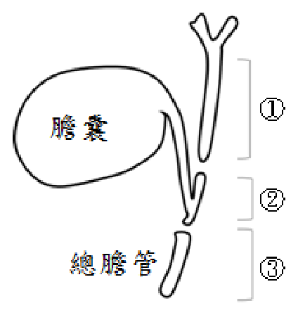
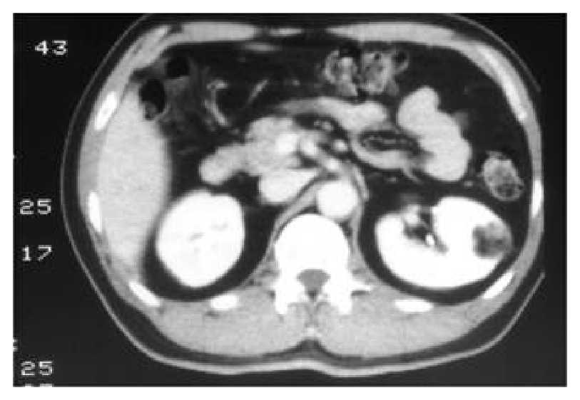
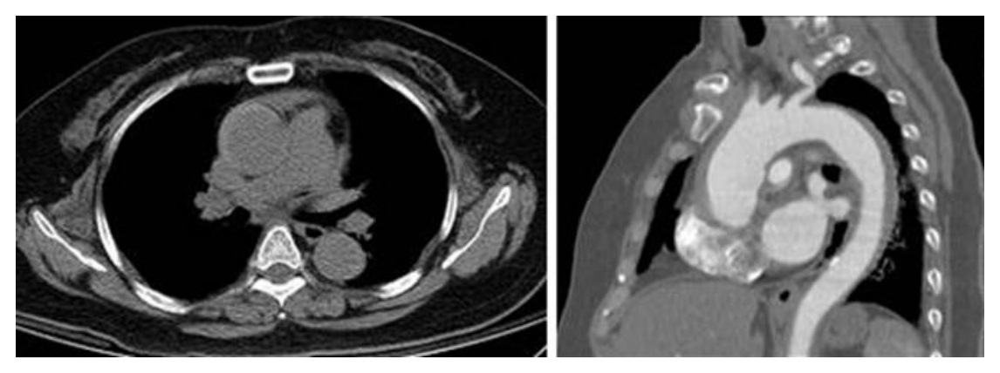
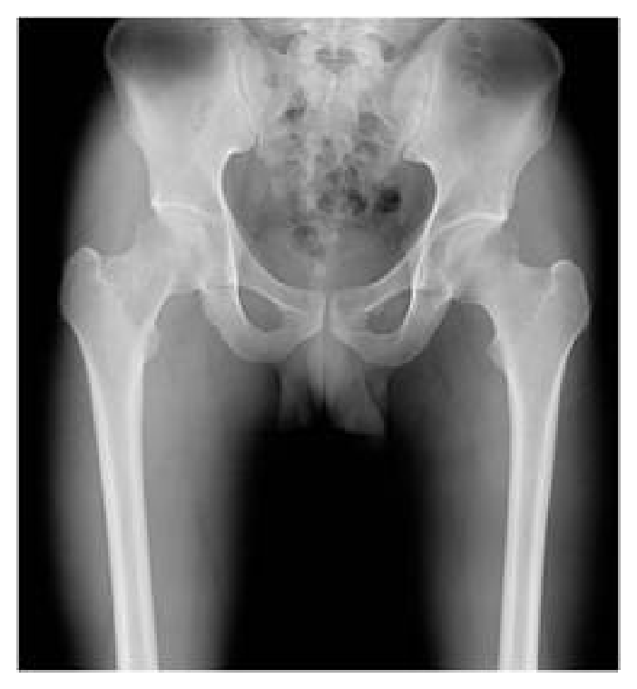

開卷有益 ／
醫師 ／ 醫學（五）（包括外科、骨科、泌尿科等科目及其相關臨床實例與醫學倫理） ／ 110 年第 1 次110 年第 1 次醫師醫學（五）（包括外科、骨科、泌尿科等科目及其相關臨床實例與醫學倫理）試題與答案
這一頁是民國 110 年第 1 次醫師醫學（五）（包括外科、骨科、泌尿科等科目及其相關臨床實例與醫學倫理）的整份歷屆試題，共 80 題，題目與標準答案出自考選部「國家考試試題及測驗式試題答案」開放資料，其中 80 題附有詳解。以下逐題列出題幹、選項與答案；要計時作答或記錄成績，請用線上練習。
考選部原始場次代碼：110020
線上作答這一科 →
全部 80 題
第 1 題
目前對於重大外傷病患的處理，大都依據Damage Control Principles；針對這種處理策略的敘述，下列何者錯誤？
（A） 外傷病患出現的lethal triad包括 hypotension, hypothermia, metabolic acidosis（B） 手術策略為積極復甦處置（aggressive resuscitation），快速止血處理（quickly managing bleeding），腸道破裂快速縫合或局部切掉但不接回，及胸腹部開刀傷口暫時性關閉（temporary closure）（C） 軍方於戰場處理的經驗，建議resuscitation時，Packed RBC, FFP及platelet應使用1：1：1的比例（D） 最近的文獻，亦有Tranexamic acid(TXA)應用在Damage Control Principles中答案：（A）
詳解與考點 正解：題目問 Damage Control Principles 何者錯誤，關鍵是致命三聯徵（lethal triad）的組成。外傷復甦中典型致命三聯徵為低體溫（hypothermia）、代謝性酸中毒（metabolic acidosis）與凝血異常（coagulopathy），不是低血壓；因此（A）錯誤，故選 A。
B：損傷控制手術的重點是迅速止血與控制污染、暫時關腹，待生理狀態改善後再做確定性修復，敘述正確，故非答案。
C：大量輸血復甦常採接近紅血球、血漿與血小板均衡補充的策略；1:1:1 是常見的損傷控制復甦概念，故非答案。
D：tranexamic acid（TXA）可納入適當時機的重大出血處置，與損傷控制復甦概念相容，故非答案。
本題考點：損傷控制手術（damage control surgery）先控制出血與污染；致命三聯徵（lethal triad）為低體溫、酸中毒、凝血異常；損傷控制復甦（damage control resuscitation）重視平衡輸血與止血。
第 2 題
39歲男性，有本態性高血壓、高脂血症、糖尿病及肝功能異常等病史並接受藥物控制，因病態性肥胖接受腹腔鏡袖狀胃切除手術（sleeve gastrectomy）。術前病人體重130公斤，身體質量指數（body mass index）為42.4kg/m2，血壓146/70 mmHg，心跳72次/分，呼吸16次/分。術後4小時病人主訴呼吸困難，意識呈焦慮狀態，當時血壓120/95 mmHg、心跳117次/分、呼吸26次/分，給與氧氣3公升/分，使用後，動脈血氧飽和度可達100%。此時病人最有可能的診斷為何？
（A） 急性肺栓塞（acute pulmonary embolism）（B） 急性心肌梗塞（acute myocardial infarction）（C） 急性失血（acute blood loss）（D） 急性疼痛（acute pain）答案：（C）
詳解與考點 正解：官方答案為 C；術後 4 小時的心搏過速、呼吸急促與焦慮，合併收縮壓由 146 降至 120 mmHg、脈壓由 76 縮至 25 mmHg，較支持急性失血的早期代償，故依官方答案選 C。題幹未提供血紅素趨勢、引流量或影像，術後呼吸困難仍須鑑別其他危急病因。
A：急性肺栓塞可造成呼吸困難與心搏過速；補氧後飽和度改善不能排除它，臨床上仍須依整體風險判斷。
B：急性心肌梗塞可在高風險病人術後發生，但題幹未提供胸痛、心電圖或心肌標記等支持線索。
D：急性疼痛也可引起焦慮、心搏過速與呼吸加快，但不足以優先解釋收縮壓下降與脈壓縮小。
本題考點：術後早期心搏過速（postoperative tachycardia）須評估出血；急性失血（acute blood loss）可在血壓明顯下降前出現代償；術後呼吸困難（postoperative dyspnea）需鑑別肺栓塞、心肌缺血、疼痛與出血。
第 3 題
器官移植病患初期常使用高劑量的類固醇，下列敘述何者錯誤？
（A） 長期合併類固醇使用仍是移植病患標準的給藥模式（B） 副作用的產生是dose dependent（C） 急性排斥往往需要高劑量類固醇注射治療（D） 類固醇初期高劑量使用會產生全身水腫情形答案：（A）
詳解與考點 正解：題目問器官移植初期類固醇使用何者錯誤。類固醇常用於移植初期誘導與急性排斥治療，但為減少累積毒性，現代免疫抑制策略多會盡量減量或採 steroid-sparing 方案；（A）稱長期合併類固醇仍一律是標準模式過度概括，故選 A。
B：類固醇副作用與劑量及暴露時間相關，劑量愈高通常風險愈高，敘述正確，故非答案。
C：急性排斥反應常使用高劑量靜脈類固醇治療，敘述正確，故非答案。
D：初期高劑量類固醇可造成鈉水滯留與全身水腫，敘述正確，故非答案。
本題考點：器官移植（organ transplantation）的免疫抑制（immunosuppression）須平衡排斥與藥物毒性；類固醇（corticosteroid）可治療急性排斥；steroid-sparing strategy 用於降低長期副作用。
第 4 題
有關人類惡性腫瘤之描述，下列何者錯誤？
（A） 惡性腫瘤最常轉移的位置之一為肺臟及肋膜（B） 尿中Bence Jones protein是淋巴癌的腫瘤生物指標（tumor biomarker）（C） 手術切除肺臟、肝臟或腦部的單一轉移病灶，有機會延長病人存活率（D） 血液中癌胚蛋白（carcinoembryonic antigen, CEA）的敏感及專一性並不佳，但可做為手術後追蹤腫瘤復發的參考答案：（B）
詳解與考點 正解：題目問惡性腫瘤描述何者錯誤，關鍵是腫瘤標記的對應疾病。尿中 Bence Jones protein 是單株免疫球蛋白輕鏈，典型與多發性骨髓瘤（multiple myeloma）相關，不是淋巴癌的一般腫瘤生物標記，故選 B。
A：肺臟是血行轉移常見部位，肋膜也可受多種惡性腫瘤侵犯，敘述正確，故非答案。
C：在經嚴格挑選的病人，肺、肝或腦的孤立轉移病灶可考慮局部切除，可能延長存活，敘述正確，故非答案。
D：CEA 的敏感度與特異性不足以單獨用於診斷，但可作為部分腫瘤術後追蹤復發的參考，敘述正確，故非答案。
本題考點：Bence Jones protein 是免疫球蛋白輕鏈（immunoglobulin light chain），與多發性骨髓瘤（multiple myeloma）相關；腫瘤標記（tumor biomarker）多用於追蹤而非單獨確診；寡轉移（oligometastasis）可能適用局部治療。
第 5 題
術後48至72小時內發燒較常見的原因是：
（A） 傷口發炎（wound infection）（B） 腹內膿瘍（intra-abdominal abscess）（C） 肺泡塌陷（atelectasis）（D） 尿道感染（urinary tract infection）答案：（C）
詳解與考點 正解：術後 48～72 小時的發燒時點。傳統術後發燒的時間性鑑別中，肺泡塌陷（atelectasis）常被列為術後早期、約第 1～3 天的常見原因，因此依題目設定選 C。惟「肺泡塌陷本身直接造成發燒」的因果關係在近代證據中具爭議，術後發燒仍須依臨床症狀搜尋感染、血栓、藥物反應等原因
A：傷口感染通常較常在術後數日後才表現出明顯局部紅腫、疼痛或膿性分泌物，不是本題所問的典型 48～72 小時首選。
B：腹內膿瘍多需較長時間形成，通常較晚出現，故非此早期時段最常見原因。
D：尿道感染可造成術後發燒，尤其有導尿管時，但相較本題傳統時序分類，非 48～72 小時的首選。
本題考點：術後發燒（postoperative fever）需依時序與症狀鑑別；肺泡塌陷（atelectasis）是傳統早期術後發燒分類中的選項；感染評估（infection evaluation）不可只依時間推定。
第 6 題
營養支持對於外科重症的病人極為重要，下列何者最接近正常體重病人一天的基礎能量消耗（basal energyexpenditure）？
（A） 10～15 Kcal x BW（Kg）（B） 15～20 Kcal x BW（Kg）（C） 25～30 Kcal x BW（Kg）（D） 30～35 Kcal x BW（Kg）答案：（C）
詳解與考點 正解：本題將 25～30 kcal/kg/day 當作臨床每日能量需求的簡化估算法，四項中以 C 最接近，故選 C。嚴格定義的基礎能量消耗（BEE）或 resting energy expenditure 通常較低，宜以間接熱量測定或預測公式估算；題目用語混合了 BEE 與每日能量需求。
A：10～15 kcal/kg/day 偏低，通常不足以作為正常體重成人的日常供能粗估。
B：15～20 kcal/kg/day 仍低於本題採用的簡化每日能量需求範圍。
D：30～35 kcal/kg/day 偏向較高供能估計，較可能用於須考量疾病壓力與臨床監測的情境。
本題考點：基礎能量消耗（basal energy expenditure, BEE）不同於總能量消耗（total energy expenditure）；25～30 kcal/kg/day 是臨床供能的粗估；營養支持（nutrition support）須依壓力代謝與監測調整。
第 7 題
下列何者不是常壓性水腦（normal pressure hydrocephalus）臨床的三樣典型表徵（triad）？
（A） 失智（dementia）（B） 步態不穩（gait ataxia）（C） 尿失禁（urinary incontinence）（D） 肢體顫抖（tremor）答案：（D）
詳解與考點 正解：常壓性水腦的關鍵是典型三徵；其核心表現為步態障礙、認知功能下降與尿失禁，肢體顫抖不屬於此三徵，故選 D。
A：失智或認知功能下降是常壓性水腦的典型表現之一，故不是本題所問的非典型表徵。
B：步態不穩常是最早且最顯著的症狀，典型可呈小步、磁性步態，屬三徵之一。
C：尿失禁是常壓性水腦三徵之一，常隨病程出現，故非答案。
本題考點：常壓性水腦（normal pressure hydrocephalus, NPH）三徵——步態障礙（gait disturbance）、認知功能下降（cognitive impairment）與尿失禁（urinary incontinence）；肢體顫抖較應聯想到其他運動障礙。
第 8 題
下列關於腦膜瘤（Meningioma）的敘述，何者錯誤？
（A） 腫瘤細胞源自於硬腦膜（Dura）（B） 有可能從良性變為惡性（malignant transformation）（C） 有可能導致周圍骨增生（hyperostosis）（D） 有可能侵犯進入周圍的靜脈竇（venous sinus）答案：（A）
詳解與考點 正解：腦膜瘤的細胞起源；腦膜瘤起自蛛網膜帽細胞（arachnoid cap cells），不是由硬腦膜本身的細胞起源，故錯誤的是 A。它常附著硬腦膜而容易讓人誤以為源自硬腦膜，這正是本選項看似合理之處。
B：多數腦膜瘤為良性，但確有非典型或惡性級別及較具侵襲性的情形；以「有可能」描述並不錯誤。
C：腦膜瘤可造成鄰近顱骨增厚，即周圍骨增生（hyperostosis），是常見影像特徵。
D：位於近靜脈竇的腦膜瘤可侵犯或包覆靜脈竇，影響手術切除策略，敘述正確。
本題考點：腦膜瘤（meningioma）——起源為蛛網膜帽細胞（arachnoid cap cells），常與硬腦膜相連；可見骨增生（hyperostosis）及靜脈竇（venous sinus）侵犯。
第 9 題
三叉神經痛最常因那一條血管壓迫而造成？
（A） 前小腦下動脈（anterior inferior cerebellar artery）（B） 後小腦下動脈（posterior inferior cerebellar artery）（C） 小腦上動脈（superior cerebellar artery）（D） 前脈絡膜動脈（anterior choroidal artery）答案：（C）
詳解與考點 正解：典型三叉神經痛最常見的機轉是三叉神經根進入區受到血管壓迫，其中最常見的責任血管為小腦上動脈（superior cerebellar artery），故選 C。
A：前小腦下動脈雖位於後循環而可能與腦神經血管壓迫症候群相關，但不是典型三叉神經痛最常見的壓迫血管。
B：後小腦下動脈較常在延髓下段附近走行，並非三叉神經根進入區最常見的責任血管。
D：前脈絡膜動脈主要供應深部腦組織，解剖位置不符合典型三叉神經痛的常見神經血管壓迫位置。
本題考點：三叉神經痛（trigeminal neuralgia）——典型型常由神經血管壓迫（neurovascular compression）引起；小腦上動脈（superior cerebellar artery）是最常見責任血管。
第 10 題
有關腰椎退化神經病變，下列敘述何者錯誤？
（A） 腰椎椎間盤突出（lumbar disc herniation）最常發生在L3-4或L4-5處（B） 腰椎退化椎管狹窄常導因於後側小關節或黃韌帶變大、變厚，造成神經椎孔狹小，神經壓迫（C） 間歇性跛行可藉由暫時坐下而使症狀緩解（D） 踝反射降低所代表的通常是S1神經根壓迫答案：（A）
詳解與考點 正解：腰椎椎間盤突出最常發生的節段；最常見為L4-5與L5-S1，而非L3-4與L4-5，故錯誤的是 A。
B：退化性椎管狹窄可由小關節肥大與黃韌帶肥厚造成椎管或神經孔狹窄，進而壓迫神經，敘述正確。
C：神經性間歇性跛行常在坐下或腰椎屈曲後緩解；這點看似也可見於血管性跛行，但血管性跛行主要是停止運動後緩解，未必需靠坐下屈腰。
D：踝反射主要反映S1神經根功能，踝反射降低可支持S1神經根受壓，敘述正確。
本題考點：腰椎椎間盤突出（lumbar disc herniation）——常見節段為L4-5與L5-S1；腰椎椎管狹窄（lumbar spinal stenosis）可造成神經性間歇性跛行（neurogenic claudication）；踝反射對應S1神經根。
第 11 題
依據Mathes and Nahai對肌肉皮瓣（muscle flaps）血管供應做分類，下列那一型較少用來做顯微組織移植的肌肉皮瓣？
（A） 第一型（B） 第二型（C） 第三型（D） 第四型答案：（D）
詳解與考點 正解：Mathes and Nahai分類中，第四型肌肉皮瓣由多個節段性血管蒂供應，缺乏可供安全單一血管蒂轉移的優勢，因此較少用作顯微組織移植，故選 D。
A：第一型具有單一主要血管蒂，血管解剖較單純，可作為顯微游離皮瓣的基礎。
B：第二型有一個主要血管蒂及次要血管蒂，主要蒂通常可供游離移植使用，故非最少使用者。
C：第三型有兩個主要血管蒂，雖需評估取瓣設計，但並非因節段性供血而天然不利於顯微移植。
本題考點：Mathes and Nahai肌肉皮瓣分類（Mathes and Nahai classification）——依主要與次要血管蒂的數目及型態分類；第四型（type IV）為多節段性血管供應，游離組織移植的血管蒂處理較受限。
第 12 題
在大面積燒燙傷治療中，充分的體液復甦（fluid resuscitation）是避免休克的重要治療。對於30歲、70公斤的男性燒燙傷病人，二度及三度傷口共占體表面積（TBSA）40%，下列處置何者最不適當？
（A） 建立靜脈管線（IV line）開始體液復甦（fluid resuscitation），並插尿管監測尿量（B） 如果按照Parkland formula靜脈輸液是給與lactated Ringer solution，從700cc/hr開始給與（C） 尿量須維持在35 cc/hr 以上（D） 給與lactated Ringer solution 2小時後，尿量突然變少，可再給與albumin，從0.5ml / Kg / % TBSA burn area開始給與答案：（D）
詳解與考點 正解：初期燒傷復甦應先以乳酸林格氏液依反應調整，而不是在開始後2小時因尿量變少就立即加白蛋白。Parkland formula計算為4 ml × 70 kg × 40=11200 ml，前8小時給一半即5600 ml，平均速率為5600 ÷ 8=700 ml/hr，故 B 的起始速率可由題內數值推得。D 過早改加albumin且所述方案不合初期以晶體液和尿量滴定的原則，最不適當，故選 D。
A：大面積燒傷應迅速建立靜脈路徑開始復甦，並留置導尿管監測尿量，以尿量協助調整輸液量，為適當處置。
B：依上述計算，前8小時的平均輸液速率為700 ml/hr；選項所列乳酸林格氏液起始速率與Parkland formula相符。
C：成人燒傷復甦以每小時尿量至少約0.5 ml/kg作為常用目標；70 kg病人的35 ml/hr正相當於0.5 ml/kg/hr，敘述適當。
本題考點：燒傷體液復甦（burn fluid resuscitation）——Parkland formula為4 ml × 體重kg × 燒傷TBSA百分比，前8小時給半量；尿量（urine output）是調整復甦的重要終點；初期以晶體液（crystalloid）為主。
第 13 題
請選擇出急性傷口癒合過程（wound healing）正確的順序：①重塑期（remodeling） ②增生期（proliferation） ③成熟期（maturation） ④發炎期（inflammation） ⑤凝血（coagulation）
（A） ①→②→③→④→⑤（B） ④→⑤→③→②→①（C） ⑤→④→①→②→③（D） ⑤→④→②→③→①答案：（D）
詳解與考點 正解：急性傷口癒合的時序，先止血凝血，接著發炎清除傷口，再進入增生、成熟與重塑；依題目將成熟期與重塑期拆開列示的用語，正確順序為⑤→④→②→③→①，故選 D。成熟期（maturation）與重塑期（remodeling）在不少教材會合稱或重疊使用，這是本題術語切分的不確定處
A：此順序由重塑期開始，與傷口形成後必先止血凝血的生理過程相反。
B：此順序把發炎放在凝血之前；血小板與凝血反應先形成初步止血與傷口基質，之後才是發炎細胞反應。
C：此順序雖先列凝血與發炎，但把重塑期放在增生期之前；膠原沉積、肉芽組織形成等增生過程應先於後續成熟重塑。
本題考點：傷口癒合（wound healing）——止血／凝血（hemostasis/coagulation）後依序為發炎期（inflammation）、增生期（proliferation）與成熟重塑（maturation/remodeling）；成熟與重塑在不同教材的命名可能重疊。
第 14 題
傷口癒合的機轉中， 下列何者最先出現並扮演啟動癒合的角色？
（A） 血小板（platelet）（B） 紅血球（RBC）（C） 巨噬細胞（macrophage）（D） 膠原蛋白（collagen）答案：（A）
詳解與考點 正解：傷口剛形成時最先啟動癒合的是血小板；血小板聚集參與止血，並釋放多種訊號分子以啟動後續發炎與修復，故選 A。
B：紅血球可隨出血出現在傷口中，但主要功能是攜帶氧氣，並非啟動傷口癒合的關鍵細胞。
C：巨噬細胞在發炎期清除壞死組織並調控修復，角色重要但出現在血小板啟動止血之後。
D：膠原蛋白是增生與後續重塑階段形成的細胞外基質成分，不是最先出現的啟動因子。
本題考點：止血期（hemostasis）——血小板（platelet）最早聚集形成血栓並釋放修復訊號；巨噬細胞（macrophage）主要參與後續發炎與組織修復；膠原蛋白（collagen）在增生與重塑期扮演結構角色。
第 15 題
有關皮膚惡性腫瘤的敘述，下列何者正確？
（A） Kaposi's sarcoma跟人類腺病毒（adeno virus）相關，好發於年輕人或免疫不全的人（B） 皮纖維肉瘤（dermatofibrosarcoma protuberans）是一種低度惡性的皮膚癌，手術切除是主要治療，無需做淋巴的摘除（C） 惡性纖維組織瘤（malignant fibrous histiocytoma）好發於老年人，治療方法是手術切除即可，且很少轉移（D） 血管性肉瘤（angiosarcoma）是相對良性的腫瘤，好發於頭頸區域，手術切除是主要治療答案：（B）
詳解與考點 正解：皮纖維肉瘤隆突型（dermatofibrosarcoma protuberans）屬局部侵襲性、低度惡性的皮膚軟組織腫瘤，主要治療是完整手術切除；其淋巴結轉移少見，通常不需常規淋巴結摘除，故選 B。
A：Kaposi肉瘤與人類皰疹病毒第8型（human herpesvirus 8, HHV-8）相關，不是腺病毒；免疫低下確是重要危險因子，但病原體寫錯使本項錯誤。
C：惡性纖維組織瘤現多歸為未分化多形性肉瘤（undifferentiated pleomorphic sarcoma），可有局部復發與遠端轉移風險，不能以手術切除即可且很少轉移概括。
D：血管性肉瘤是侵襲性高的惡性腫瘤，雖可好發頭頸皮膚，卻不能稱為相對良性。
本題考點：皮纖維肉瘤隆突型（dermatofibrosarcoma protuberans, DFSP）——局部侵襲性強但遠端與淋巴轉移較少，完整切除是主要治療；Kaposi肉瘤（Kaposi sarcoma）與HHV-8相關；血管性肉瘤（angiosarcoma）具高度惡性。
第 16 題
下列那些先天性心臟病若不及時手術，可能會發生所謂的Eisenmenger syndrome，最後需要心肺移植？①肺動脈瓣狹窄 ②心室中隔缺損 ③動脈幹症（truncus arteriosus） ④開放性動脈導管
（A） 僅①②（B） 僅①③（C） ①②③（D） ②③④答案：（D）
詳解與考點 正解：Eisenmenger syndrome源於未矯正的大量左向右分流，長期肺血流增加造成不可逆肺血管病變，之後分流反轉。心室中隔缺損、動脈幹症與開放性動脈導管均可形成這種分流，而單純肺動脈瓣狹窄不會造成左向右分流，故選 D。
A：此組合納入肺動脈瓣狹窄，卻遺漏動脈幹症與開放性動脈導管，未符合分流導致肺高壓的判準。
B：肺動脈瓣狹窄不是造成Eisenmenger syndrome的典型病變，且本組合遺漏開放性動脈導管。
C：本組合雖包含心室中隔缺損與動脈幹症，但錯納肺動脈瓣狹窄並漏掉開放性動脈導管。
本題考點：Eisenmenger syndrome——長期左向右分流（left-to-right shunt）導致肺血管阻力上升及分流反轉；心室中隔缺損（ventricular septal defect）、動脈幹症（truncus arteriosus）與開放性動脈導管（patent ductus arteriosus）為典型高風險病變。
第 17 題
在急性主動脈剝離（aortic dissection）的治療上，下列敘述何者錯誤？
（A） 在高度懷疑為主動脈剝離之情形下，可先實行降低心跳及控制血壓之藥物治療（anti-pulse therapy and bloodpressure control）（B） 對急性史丹佛A型（Stanford type A）之主動脈剝離病患，應考慮進行緊急主動脈置換手術（C） 對急性史丹佛B型（Stanford type B）之主動脈剝離合併有器官供血不足（malperfusion）之病患，應立即考慮介入性血管內主動脈支架術（endovascular treatment）之可能性（D） 對於急性史丹佛A型（Stanford type A）之主動脈剝離合併有器官供血不足的病患，與無器官供血不足者，兩者之預後相同答案：（D）
詳解與考點 正解：急性Stanford type A主動脈剝離若合併器官灌流不足，代表病情更複雜且死亡風險較高，預後不會與無灌流不足者相同，故錯誤的是 D。
A：在高度懷疑主動脈剝離時，先以降低心跳與血壓減少主動脈壁剪力的抗脈衝治療（anti-impulse therapy）是重要的初始處置。
B：急性Stanford type A涉及升主動脈，通常需緊急手術處理，以降低破裂、心包膜填塞及重要分支併發症風險。
C：急性Stanford type B合併器官灌流不足屬複雜型剝離，應立即評估血管內主動脈修復（endovascular treatment）的必要性。
本題考點：急性主動脈剝離（acute aortic dissection）——抗脈衝治療（anti-impulse therapy）先降低血流動力學壓力；Stanford type A多需緊急手術；複雜型Stanford type B常需血管內治療（endovascular treatment）；器官灌流不足（malperfusion）是高風險徵象。
第 18 題
有關心臟手術時使用人工心肺機之敘述，下列何者錯誤？
（A） 可以升降體溫（B） 合併心臟麻痺液（cardioplegia）使用，可以讓心臟完全停止跳動（C） 氧合器（oxygenator）可以暫時取代肺臟功能（D） 不會引發全身發炎反應症候群（systemic inflammatory response syndrome, SIRS）答案：（D）
詳解與考點 正解：人工心肺機使血液接觸非生理表面、經歷手術創傷與缺血再灌流等因素，可能引發全身發炎反應症候群（SIRS），故「不會引發」的絕對敘述錯誤，選 D。
A：人工心肺迴路中的熱交換器可協助調節病人體溫，故可以升降體溫。
B：配合心臟麻痺液（cardioplegia）可使心臟停止跳動，提供無血、靜止的手術視野，敘述正確。
C：氧合器可在體外進行氧合與二氧化碳排除，暫時取代肺部氣體交換功能，敘述正確。
本題考點：人工心肺機（cardiopulmonary bypass, CPB）——氧合器（oxygenator）暫代肺部氣體交換、熱交換器調節體溫；血液與體外迴路接觸可造成全身發炎反應（systemic inflammatory response syndrome, SIRS）。
第 19 題
68歲農婦因右手輕微無力伴隨下肢輕微水腫來診，經診斷為二尖瓣狹窄（mitral stenosis），超音波顯示為心房顫動（atrial fibrillation）且瓣膜開口為1.35 cm2，過去有右側膿胸且經開胸治療之病史，下列敘述或處置何者正確？①中風之故，不應給與抗凝血劑，如warfarin ②應建議進行心導管檢查 ③進行瓣膜手術，且可同時進行迷宮手術（Cox-Maze procedure） ④可選擇胸腔鏡或小傷口內視鏡進行手術
（A） 僅①④（B） ②③④（C） ①②③（D） 僅②③答案：（D）
詳解與考點 正解：本題的關鍵是二尖瓣狹窄合併心房顫動及疑似栓塞性中風；應進一步以心導管評估手術相關血流動力學與冠狀動脈狀況，若需瓣膜手術可合併Cox-Maze procedure處理心房顫動。既往右側膿胸開胸史會使右胸沾黏與微創進路較不利，因此正確組合為僅②③，故選 D。
A：此組合同時納入「因中風不應給warfarin」與微創胸腔鏡／小傷口手術；前者忽略二尖瓣狹窄合併心房顫動的血栓栓塞風險，後者也未考量既往右側開胸後沾黏的技術限制。
B：此組合雖包含心導管檢查、瓣膜手術與可合併Maze手術，但錯把既往右側膿胸開胸後仍可直接選微創右胸進路視為適當。
C：此組合的心導管檢查與合併Maze手術方向正確，但錯納不應使用warfarin的敘述。中風看似使人擔心出血，但二尖瓣狹窄合併心房顫動通常正是需要評估並使用抗凝血預防再栓塞的情境。
本題考點：二尖瓣狹窄（mitral stenosis）合併心房顫動（atrial fibrillation）——應評估血栓栓塞與抗凝血需求；瓣膜手術可合併Cox-Maze procedure；既往胸腔手術造成的沾黏會影響微創手術進路選擇。
第 20 題
下列對冠狀動脈繞道術（coronary artery bypass grafting, CABG）之描述何者錯誤？
（A） 不使用心肺機之不停跳術式（off-pump coronary artery bypass）比傳統之停跳之術式，在各項研究皆顯示可以減少發炎指數，即有更好之長期通暢率（B） 如果病人是70歲女性，其三條冠狀血管皆有80到90%狹窄，且有糖尿病，冠狀動脈繞道術應該是首選之治療（C） 對長期通暢率而言，內乳動脈遠佳於大隱靜脈，術後用藥可建議阿斯匹靈、乙型阻斷劑、抗心律不整藥物、降血脂藥物（D） 術後可能之合併症含心包膜填充、出血、腦病變、腎衰竭、縱膈腔炎等答案：（A）
詳解與考點 正解：把研究結果說成「各項研究皆顯示」且推論出較佳長期通暢率；不停跳冠狀動脈繞道術與傳統使用心肺機手術各有適應情境，不能由較少體外循環相關發炎反應直接斷言所有研究均證實長期通暢率更好，故錯誤的是 A。
B：多支冠狀動脈嚴重狹窄合併糖尿病時，冠狀動脈繞道術常是重要且合理的血運重建選項，敘述正確。
C：內乳動脈作為移植物的長期通暢率通常優於大隱靜脈；術後二級預防與個別心血管風險用藥管理均重要，敘述方向正確。
D：心包膜填塞、出血、神經系統併發症、腎功能損傷與縱膈腔感染均可為CABG後併發症，敘述正確。
本題考點：冠狀動脈繞道術（coronary artery bypass grafting, CABG）——不停跳術（off-pump CABG）與使用人工心肺術式須依病人與血管條件選擇；內乳動脈（internal mammary artery）具有優良長期通暢性；術後須注意出血、心包膜填塞與縱膈腔炎等併發症。
第 21 題
關於胸腺瘤之敘述，何者正確？
（A） 手術是主要治療成功的方法，即使切除上腔靜脈再重建，預後也比較好（B） 10%～50%的重症肌無力病人會發現胸腺瘤（C） 胸腺瘤不是胸腺癌，不會有上腔靜脈症候群（SVC Syndrome）發生（D） 胸腺瘤分期是根據Masaoka staging，第4a期是指有淋巴轉移答案：（A）
詳解與考點 正解：胸腺瘤以完整手術切除為最主要的根治方式；即使局部侵犯上腔靜脈，於可完整切除的情況下合併血管切除與重建仍可爭取較佳的腫瘤控制與預後，故選 A。
B：此選項把胸腺瘤與重症肌無力的比例方向混淆；重症肌無力患者中發現胸腺瘤的比例遠低於選項所述範圍，而胸腺瘤患者合併重症肌無力較常見。
C：胸腺瘤雖不同於胸腺癌，仍可能局部侵犯縱膈構造；侵犯上腔靜脈時可以出現上腔靜脈症候群，故「不會」錯誤。
D：Masaoka第四期中的IVa指胸膜或心包膜播散；淋巴或血行轉移是IVb，故本項分期錯置。
本題考點：胸腺瘤（thymoma）——完整切除（complete resection）是主要治療與重要預後因素；可合併重症肌無力（myasthenia gravis）；Masaoka分期中IVa為胸膜／心包膜播散，IVb為淋巴或血行轉移。
第 22 題
病人需要進行肺葉切除手術，下列關於肺功能的檢測敘述何者正確？
（A） FEV1為術後肺容積的最常用指標，一般要大於40%才能做肺葉切除（B） FEV1數據不足時，估算預期術後FEV1（ppo-FEV1）在20～30%以上應可以安全進行手術（C） DLCO小於80%會增加手術風險（D） DLCO小於50%應加測運動心肺功能檢查，因為運動心肺功能檢查較準確答案：（D）
詳解與考點 正解：肺葉切除前若DLCO明顯偏低，單憑靜態肺功能不足以完整評估手術耐受性，應再以運動心肺功能檢查（cardiopulmonary exercise testing）作整體運動能力與心肺儲備評估；題目以DLCO小於50%作為加做檢查的門檻，故選 D。實際術前風險分層還要結合預測術後FEV1與預測術後DLCO，且不同流程的數值門檻可能不同
A：FEV1是重要指標，但不是「術後肺容積」的指標，且不能只以單一FEV1數字決定是否可肺葉切除。
B：預測術後FEV1應與預測術後DLCO及運動能力共同判讀；以20～30%便概括為可安全手術過度簡化風險評估。
C：DLCO下降確會提示較高肺切除風險，但「小於80%」本身不是直接決定手術與否的充分條件，仍應進一步計算預測術後功能與分層。
本題考點：肺切除術前評估（preoperative evaluation for lung resection）——FEV1與DLCO須估算預測術後值（predicted postoperative value）；運動心肺功能檢查（cardiopulmonary exercise testing, CPET）用於低肺功能病人的進一步風險分層；實際門檻依評估流程而異。
第 23 題
有關於縱膈腔疾病的敘述，下列何者錯誤？
（A） 精原性生殖細胞瘤（seminomatous germ cell tumor）常分泌AFP（α-fetoprotein）或β-hCG（human chorionicgonadotropin），為放療有效（radiosensitive）（B） 大人和小孩的縱膈腔腫瘤好發種類不同，小孩常是神經性腫瘤（neurogenic tumor）（C） 縱膈腔腫瘤經由手術移除後再輔助治療，其預後會比直接對大腫瘤做化放療有效（D） 小顆的胸腺瘤合併有重症肌無力時，應盡早手術切除答案：（A）
詳解與考點 正解：純精原性生殖細胞瘤可分泌 β-hCG，但不應分泌 AFP；AFP 升高應考慮混合型或非精原性生殖細胞腫瘤。因此（A）將 AFP 或 β-hCG 一概列為精原性腫瘤常見分泌物而錯誤，故選 A。惟（C）也把不同病理的縱膈腫瘤過度概括，故有單一答案爭議。
B：成人與兒童的縱膈腫瘤種類不同，兒童較常見神經性腫瘤，敘述正確。
C：可切除胸腺瘤等特定病理可採手術後輔助治療；但縱膈淋巴瘤或精原性生殖細胞瘤常以化療或放療為主，原敘述不能作為所有縱膈腫瘤的通則。
D：小型可切除胸腺瘤合併重症肌無力時，手術切除是重要治療。
本題考點：縱膈生殖細胞腫瘤（mediastinal germ cell tumor）中，純精原性腫瘤（seminoma）不應有 AFP 上升；縱膈腫瘤治療（mediastinal tumor treatment）須依病理與可切除性決定。
第 24 題
下列關於Barrett esophagus之敘述，何者錯誤？
（A） 是一種intestinal metaplasia（B） 如其長度超過3 cm，稱為long segment（C） 需要biopsy作確診（D） 以後變成squamous cell carcinoma之機率是一般人的40倍答案：（D）
詳解與考點 正解：Barrett食道的化生上皮會增加的是食道腺癌（esophageal adenocarcinoma）風險，不是鱗狀細胞癌；因此 D 把後續癌種說成squamous cell carcinoma，敘述錯誤，故選 D。
A：Barrett食道是遠端食道鱗狀上皮被腸型柱狀上皮取代的腸化生（intestinal metaplasia），敘述正確。
B：病灶長度超過3 cm通常稱為長節段Barrett食道（long-segment Barrett esophagus），敘述正確。
C：需以內視鏡取樣的病理檢查確認腸化生與評估異生，故biopsy是診斷的重要依據。
本題考點：Barrett食道（Barrett esophagus）——胃食道逆流相關的腸化生（intestinal metaplasia），以內視鏡切片（biopsy）確認；長節段（long segment）通常指超過3 cm；主要相關惡性轉化為食道腺癌（esophageal adenocarcinoma）。
第 25 題
有關胃食道逆流之治療，下列何者較不適當？
（A） lifestyle modification加上proton pump inhibitor（PPI）為第一線治療（B） 如內科治療已到極限而仍有症狀，則外科手術建議介入（C） 很長期使用proton pump inhibitor（PPI）有引起carcinoid tumor之可能（D） Nissen fundoplication 是partial fundoplication的一種答案：（D）
詳解與考點 正解：Nissen fundoplication是將胃底完整包繞遠端食道的360度全胃底折疊術（complete fundoplication），不是partial fundoplication，故較不適當的是 D。
A：生活型態調整合併質子幫浦抑制劑（proton pump inhibitor, PPI）是胃食道逆流常用的第一線治療方向，敘述適當。
B：經充分內科治療仍持續症狀，且確認症狀與逆流相關者，可評估抗逆流手術介入，敘述適當。
C：長期PPI使用需依適應症定期評估；雖有高胃泌素血症與類癌腫瘤的理論性疑慮，但本項以「可能」表述，並未像 D 一樣將術式的基本定義說錯。
本題考點：胃食道逆流疾病（gastroesophageal reflux disease, GERD）——第一線為生活型態調整（lifestyle modification）與PPI；抗逆流手術（antireflux surgery）可用於選擇性病人；Nissen fundoplication為360度全胃底折疊術，partial fundoplication則為部分包繞術式。
第 26 題
下列有關乳糜胸（chylothorax）的敘述，何者錯誤？
（A） 左頸部／鎖骨上（supraclavicular）淋巴結廓清手術是原因之一（B） 常從左側胸腔手術處理（C） 保守治療需持續1～2週（D） 手術治療常以結紮橫膈膜上乳糜管（thoracic duct）為主答案：（B）
詳解與考點 正解：乳糜胸的手術處理路徑。胸導管在胸腔內多由右側後縱膈上行，故需結紮橫膈上胸導管時，常採右側胸腔途徑；「常從左側胸腔手術處理」不正確，故選 B。
A：左頸部或鎖骨上淋巴結廓清可能傷及胸導管末端或其分支，造成術後乳糜胸，敘述正確，故不是本題答案。
C：低脂或中鏈三酸甘油酯飲食、腸道休息與必要時營養支持是初始保守處置；持續觀察約1～2週以評估是否持續大量漏乳糜，屬合理的處置架構，故非錯誤敘述。
D：保守治療失敗或乳糜流量持續很大時，可在橫膈膜上方結紮胸導管以阻斷漏出來源，為常用手術原則，故正確。
本題考點：乳糜胸（chylothorax）的成因常為胸導管或其分支受傷；胸導管（thoracic duct）的解剖走向決定手術進入側；乳糜漏（chyle leak）先保守治療，失敗時考慮胸導管結紮。
第 27 題
一位48歲男性，最近兩個月吞嚥困難、食慾減低、體重減輕5公斤，同時有聲音沙啞現象至門診求診，下列那一項檢查最不恰當？
（A） 內視鏡超音波（endoscopic ultrasound）（B） 內視鏡逆行性膽道胰管攝影（ERCP）（C） 電腦斷層（CT）（D） 食道攝影（esophagography）答案：（B）
詳解與考點 正解：吞嚥困難、體重減輕與聲音沙啞是食道癌的警訊，檢查重點在食道病灶的診斷、局部侵犯與分期。ERCP 是評估或治療膽胰管阻塞的內視鏡技術，與此情境沒有直接對應，最不恰當，故選 B。
A：內視鏡超音波（endoscopic ultrasound）可評估食道腫瘤侵犯深度與鄰近淋巴結，是局部T、N分期的重要工具，故適當。
C：電腦斷層（CT）可評估縱膈、肺、肝等遠端或區域性擴散，屬食道惡性腫瘤分期的一環，故非最不恰當。
D：食道攝影（esophagography）能顯示吞嚥時的狹窄位置、範圍與通過情形；雖不能取代內視鏡切片確診，仍可協助評估，故非答案。
本題考點：食道癌（esophageal cancer）的警訊為進行性吞嚥困難與體重減輕；內視鏡超音波（endoscopic ultrasound）用於局部分期；ERCP 主要處理膽道與胰管疾病。
第 28 題
下列有關膽管細胞癌（cholangiocarcinoma）的敘述，何者錯誤？
（A） 從十二指腸壺腹處（Ampulla of Vater）到肝內膽管都有可能發生，其中又以在肝門分支處的膽道癌（Klatskin tumor）最常見（B） 根據最近的文獻顯示，肝內膽管細胞癌可能跟病毒感染、非酒精性脂肪肝、肝硬化及糖尿病有相關性（C） 完整切除是肝內膽管細胞癌治療的準則，一般而言，可開刀的比例約可達60%（D） 文獻指出，膽道癌對於化學治療效果很好，但對放射治療的效果並不明確答案：（D）
詳解與考點 正解：本題問膽管細胞癌的錯誤敘述。膽管細胞癌對全身性化學治療的反應通常有限，治療主要在不可切除或轉移性疾病延長存活與控制症狀，不能概稱「效果很好」；放射治療的角色也依病灶位置與治療目的而定，因此（D）的說法錯誤，故選 D。
A：膽管癌可依解剖位置分為肝內、肝門周圍與遠端膽管癌；肝門周圍的 Klatskin tumor 是常見類型，敘述方向正確。
B：肝內膽管細胞癌與慢性肝病、代謝性危險因子等有關聯；這些是風險相關性，並非表示每位有該疾病者都會發生癌症，故非錯誤。
C：對可切除的肝內膽管細胞癌，完整切除是可能治癒的主要治療。此選項的可開刀比例會隨收案族群與影像分期而異，但不改變其核心治療原則，故不是本題最明確的錯誤。
本題考點：膽管細胞癌（cholangiocarcinoma）依位置分為肝內、肝門周圍與遠端型；Klatskin tumor 為肝門周圍膽管癌；根治性切除（curative resection）是局限性疾病的關鍵治療。
第 29 題
下列有關急性胰臟炎的敘述，何者錯誤？
（A） 造成急性胰臟炎的危險因子有膽結石，酒精、藥物、自體免疫及經內視鏡逆行性膽道胰臟攝影（ERCP）（B） 評估疾病嚴重程度的方式有Ranson prognostic criteria、APACHE II分數及電腦斷層嚴重度指數（CT severityindex）（C） 若有胰臟及周邊組織壞死但無感染證據，仍須給與抗生素，避免壞死進一步變成感染性壞死或是膿瘍形成（D） 在有胰臟周圍液體堆積中的5%～15%的病患會產生胰臟偽囊腫（pancreatic pseudocyst），急性胰臟炎也會造成鄰近器官出血、感染、器官壓迫及腸道阻塞等併發症答案：（C）
詳解與考點 正解：「壞死但無感染證據」。急性胰臟炎的無菌性壞死（sterile necrosis）不應僅為預防感染而常規給予抗生素；抗生素應用於已感染的壞死或其他明確感染來源，因此（C）錯誤，故選 C。
A：膽結石、酒精、藥物、自體免疫疾病與ERCP都可誘發急性胰臟炎，敘述正確。
B：Ranson criteria、APACHE II與電腦斷層嚴重度指數都可協助評估嚴重度；各工具適用時點不同，但皆非錯誤。
D：急性胰臟炎可有液體堆積、偽囊腫、出血、感染、壓迫與腸阻塞等局部併發症。偽囊腫多在病程後期才形成，與題述整體方向相符。
本題考點：急性胰臟炎（acute pancreatitis）的常見病因為膽結石與酒精；胰臟壞死（pancreatic necrosis）須區分無菌與感染性；預防性抗生素（prophylactic antibiotics）不適用於無菌性壞死。
第 30 題
有關gastric lymphoma的敘述，下列何者正確？
（A） primary lymphoma在消化道中，最常出現在胃部，且多為T-cell type（B） gastric lymphoma的治療主流仍是以手術切除為優先考慮（C） gastric low-grade MALT lymphoma的致病機轉與幽門桿菌（H. pylori）有關（D） 此疾病對化學治療的反應不佳答案：（C）
詳解與考點 正解：胃部低惡性度MALT淋巴瘤與幽門桿菌慢性感染密切相關；根除幽門桿菌後，部分局限性病灶可緩解。因此（C）正確，故選 C。
A：原發性胃腸道淋巴瘤常見於胃部，但病理以B細胞型為主，不是多數為T細胞型，故錯。
B：胃淋巴瘤的治療依分型與期別採幽門桿菌根除、放射治療、免疫化學治療或系統性治療；手術現多非優先主流，僅在穿孔、出血等併發症或特定情況考慮，故錯。
D：多數胃淋巴瘤對適當的化學治療或免疫治療有反應，不能說反應不佳，故錯。
本題考點：胃MALT淋巴瘤（gastric MALT lymphoma）是B細胞淋巴瘤；幽門桿菌（Helicobacter pylori）根除可使部分早期病灶緩解；胃淋巴瘤（gastric lymphoma）的治療取決於分型與期別。
第 31 題
下列何種靜脈曲張現象與門靜脈高壓最為無關？
（A） 胃、食道靜脈曲張（esophagogastric varices）（B） 精索靜脈曲張（varicocele）（C） 上腹靜脈系統曲張（epigastric venous system）（D） 痔瘡靜脈叢曲張（hemorrhoidal venous plexus）答案：（B）
詳解與考點 正解：門靜脈高壓的側枝循環發生在門靜脈與體靜脈交通處。精索靜脈曲張主要與睪丸靜脈回流受阻、左腎靜脈受壓或腫瘤相關，並非典型門體循環側枝，最無關的是（B），故選 B。
A：胃、食道靜脈曲張是門靜脈經左胃靜脈與食道靜脈叢減壓的典型表現，與門靜脈高壓高度相關。
C：腹壁上腹靜脈擴張可反映臍周門體側枝循環；它看似只是皮下靜脈問題，但在肝硬化門脈高壓時具有定位意義，故非答案。
D：直腸靜脈叢可形成門體交通，門靜脈高壓可造成直腸靜脈曲張；臨床痔瘡成因不完全等同門脈高壓，但本題所稱靜脈叢曲張與門體交通有關，故非最無關。
本題考點：門靜脈高壓（portal hypertension）的門體側枝包括食道胃、直腸與臍周循環；精索靜脈曲張（varicocele）應優先思考睪丸靜脈回流異常。
第 32 題
膽囊切除時發現總膽管被電燒刀切除了3公分長度，造成膽汁滲漏，如附圖。下列那一個處置最為恰當？

（A） 將受傷的膽管（①和③）清除乾淨，銜接兩端剩餘的膽管（①和③銜接），由銜接的傷口處放置T型管作為支架（B） 將受傷的膽管（①和③）清除乾淨，銜接兩端剩餘的膽管（①和③銜接），由銜接處下方的總膽管（③）放置T型管作為支架（C） 將受傷的膽管①清除乾淨，以腸道銜接肝臟側剩餘的膽管①，並縫合③的斷端（D） 將不慎切除的膽管②清除乾淨，重新橋接回原處（①-②-③銜接），並由此段膽管②放置T型管作為支架答案：（C）
詳解與考點 正解：圖示膽囊管匯入膽道處附近的膽管受電燒傷並缺損約 3 cm；①為近端、通向肝臟的膽管，③為遠端總膽管。電燒造成的膽管損傷不只可見的缺口，邊緣還可能有熱傷害與血流受損。切除受傷的①後，以腸道與肝臟側健康膽管①做膽腸吻合，並將遠端③斷端縫合，可避開張力過大的膽管對膽管吻合及受損組織，最為恰當，故選 C。
A：將①與③直接銜接需跨越約 3 cm 的缺損，容易產生吻合張力；且兩端皆可能殘留電燒熱傷害。即使在吻合處放置 T 型管，也無法消除張力、缺血及日後膽管狹窄或滲漏的風險。
B：①與③直接吻合的根本問題同樣是膽管缺損過長及電燒邊緣受損；由③下方置入 T 型管只能作為引流或支架，不能使高張力、血流不佳的膽管吻合變得適當。
D：②是被切除且已受電燒影響的膽管段，重新橋接①－②－③會增加兩個吻合處，且移植回去的膽管段血液供應不可靠；即使放置 T 型管，仍有缺血、滲漏與狹窄風險，不宜作為修復材料。
本題考點：醫源性膽管損傷（iatrogenic bile duct injury）——電燒傷須切除受損邊緣；膽管缺損過長或無法無張力吻合時，採膽腸吻合（biliary-enteric anastomosis），常見為肝管空腸吻合（hepaticojejunostomy）；T 型管（T-tube）不能取代無張力且血流良好的修復原則。
第 33 題
胰臟移植後，導致病人死亡最常見的原因為：
（A） 心血管疾病（B） 感染（C） 惡性腫瘤（D） 器官排斥答案：（A）
詳解與考點 正解：胰臟移植受贈者常合併長期糖尿病及其血管併發症，移植後整體死亡的重要原因仍是心血管疾病。因此本題最常見死因為（A），故選 A。
B：感染在免疫抑制後確為重要併發症與死亡原因，但就本題所問的最常見整體死亡原因，仍次於心血管疾病。
C：長期免疫抑制會增加惡性腫瘤風險，但通常不是胰臟移植後最常見的死亡原因。
D：器官排斥可造成移植物失敗，然而在現代免疫抑制與監測下，並非整體受贈者死亡最常見原因。
本題考點：胰臟移植（pancreas transplantation）的受贈者常有糖尿病血管病變；心血管疾病（cardiovascular disease）是移植後長期預後的重要決定因子；免疫抑制（immunosuppression）會增加感染與腫瘤風險。
第 34 題
下列有關胰臟炎之敘述，何者正確？①急性胰臟炎70～80%原因為膽道結石及酗酒 ②慢性胰臟炎70～80%原因為酗酒 ③急性胰臟炎大部分（約90%）應以外科治療 ④血液澱粉酶素（amylase）高低可預測急性胰臟炎的嚴重度 ⑤慢性胰臟炎合併糖尿病即應考慮外科治療
（A） ①②（B） ③⑤（C） ④⑤（D） ①③答案：（A）
詳解與考點 正解：題目要找正確的組合。①急性胰臟炎最常見病因是膽結石與酒精，合計約占多數病例；②慢性胰臟炎也常與長期酒精暴露相關。③急性胰臟炎大多以支持性內科治療為主；④澱粉酶高低不等於疾病嚴重度；⑤糖尿病本身也不是慢性胰臟炎的單獨手術適應症。因此正確的是①②，即（A），故選 A。
B：此組含③與⑤。急性胰臟炎並非約90%需外科治療，且慢性胰臟炎是否手術需看疼痛、阻塞、併發症與可矯正病灶，故錯。
C：此組含④；血清澱粉酶反映診斷線索，不能單憑數值高低預測嚴重度，故錯。
D：此組含③；膽結石性胰臟炎在特定情況需介入，但大多數急性胰臟炎初始仍採輸液、止痛與營養等支持治療，故錯。
本題考點：急性胰臟炎（acute pancreatitis）以膽結石與酒精為常見病因；慢性胰臟炎（chronic pancreatitis）常與酒精相關；血清澱粉酶（serum amylase）不應作為嚴重度的單獨指標。
第 35 題
在乳癌診治中，腋下淋巴腺分為三區（level），其中第二區（level II）位於：
（A） thoracic dorsi動脈之外側（B） thoracic dorsi動脈之內側（C） 小胸肌上方者（D） 小胸肌下方者答案：（D）
詳解與考點 正解：腋下淋巴結分區以小胸肌（pectoralis minor）為地標：level I 在其外側，level II 位於其後方，level III 在其內側。選項以「小胸肌下方」描述其深面／後方位置，最符合 level II，故選 D。
A：胸背動脈（thoracodorsal artery）是腋下內容物的血管地標，並非乳癌腋下level I至III分區的主要界線；其外側不能定義level II，故錯。
B：同樣地，胸背動脈內側不是標準level II的定義位置，故錯。
C：小胸肌上方較接近前方表面，不是level II位在小胸肌深面／後方的關係，故錯。
本題考點：腋下淋巴結分區（axillary lymph node levels）以小胸肌（pectoralis minor）為標準地標；level I、II、III分別在小胸肌外側、後方、內側。
第 36 題
乳癌治療進行乳房保留手術的適應症，下列何者錯誤？
（A） 病人因肺部疾病無法接受放射線治療，則不能選擇乳房保留手術（B） 經由外科醫師評估，比較腫瘤相對於乳房大小，經局部切除後，可能影響乳房外觀，則不建議選擇乳房保留手術（C） 若手術當中，前哨淋巴結有乳癌細胞轉移，則不能選擇乳房保留手術（D） 若病灶為多發性且在不同象限，則不能選擇乳房保留手術答案：（C）
詳解與考點 正解：乳房保留手術的關鍵是可完整切除病灶並通常配合術後放射治療；腋下前哨淋巴結陽性影響腋下處置與全身治療規畫，並不單獨否定乳房保留。因此（C）錯誤，故選 C。
A：若病人無法接受術後放射治療，乳房保留後的局部控制會受影響，通常不宜選擇乳房保留手術，故正確。
B：腫瘤相對乳房過大、預期局部切除後無法維持可接受外觀時，乳房保留的適用性下降，敘述正確。
D：多發病灶分布於不同象限時，難以在保有乳房下達到完整切除與良好外觀，通常不適合乳房保留，故正確。
本題考點：乳房保留治療（breast-conserving therapy）包括局部切除與放射治療；前哨淋巴結（sentinel lymph node）狀態影響腋下分期與治療，但不是乳房保留的單獨禁忌症。
第 37 題
對於以義乳方式進行乳房重建（implant based breast reconstruction）的敘述，下列何者錯誤？
（A） 此重建方式在雙側乳房外觀的對稱性方面效果比自體皮瓣好（B） 近期要接受輔助放射線治療的病患，應評估其適用性（C） 因為義乳植入，其外觀並不會隨時間改變，病患的滿意度在五年後仍高達90%（D） 義乳植入適用於無法維持長時間麻醉的病患答案：（C）
詳解與考點 正解：義乳重建的外觀會受莢膜攣縮、重力、體重改變、皮膚軟組織萎縮與對側乳房自然下垂影響，並非植入後永不改變；把五年滿意度概括為固定90%也不恰當。因此（C）錯誤，故選 C。
A：雙側義乳重建可在體積與投射度上較容易取得對稱性；相較自體皮瓣，這是義乳方式看似簡化卻有其審美優勢的地方，故非錯誤。
B：放射治療會提高莢膜攣縮、傷口問題與重建失敗風險，因此近期或預期接受輔助放射治療時應審慎評估義乳重建，敘述正確。
D：義乳重建通常手術時間較自體組織皮瓣短，對不宜長時間麻醉者可能較合適，故正確。
本題考點：義乳乳房重建（implant-based breast reconstruction）手術時間較短且可有良好雙側對稱性；放射治療（radiotherapy）增加義乳重建併發症；莢膜攣縮（capsular contracture）會影響長期外觀與滿意度。
第 38 題
一名6個月的小女嬰，肛門周圍七點鐘方向紅腫，被診斷為肛門周圍膿瘍，治療後有改善；但此情形反反覆覆直到1歲，媽媽發現小女嬰的肛門雖然不腫了，但七點鐘方向離肛門口1公分處有一個小洞，每次擠壓會流出一些分泌物。下列敘述何者最正確？
（A） 是肛裂（anal fissure），抹藥就會好（B） 肛門瘻管（anal fistula），瘻管會繞道由六點鐘方向匯入直腸（C） 肛門瘻管（anal fistula），瘻管會直接由七點鐘方向匯入直腸（D） 發生原因是久坐或肝門脈高壓答案：（C）
詳解與考點 正解：反覆肛門周圍膿瘍後，在原先七點鐘方向距肛門口1公分處留下會排分泌物的小洞，代表形成肛門瘻管。嬰幼兒的瘻管多為單純、低位型，外口與內口常在同一放射方向，因此最符合直接由七點鐘方向通入直腸的（C），故選 C。
A：肛裂是肛管黏膜或上皮的線狀裂傷，主要表現為排便疼痛與出血，不能解釋反覆膿瘍及固定外口排膿，故錯。
B：瘻管可依路徑分型，但本例外口與感染位置均指向七點鐘方向；沒有理由推定其繞至六點鐘才通入直腸，故錯。
D：久坐與門靜脈高壓可與其他肛門直腸問題相關，卻不是嬰幼兒反覆肛周膿瘍形成瘻管的典型機轉，故錯。
本題考點：肛門周圍膿瘍（perianal abscess）可演變為肛門瘻管（anal fistula）；肛門瘻管的線索是反覆膿瘍與持續排膿的外口；嬰幼兒常見單純低位瘻管。
第 39 題
一名12歲大30公斤重的女童因為右上腹痛來到門診，她過去無特殊病史，理學檢查發現她的右上腹有壓痛，超音波檢查發現膽囊有結石，下列敘述何者錯誤？
（A） 對孩童而言，大部分的結石是膽固醇結石（cholesterol stone）（B） 與肥胖無關（C） 可以做紅血球脆性測驗（D） 有症狀者應切除膽囊答案：（A）
詳解與考點 正解：官方答案為 A；惟兒童膽結石的組成會隨年齡、族群及肥胖盛行率而異，不能概括為「大部分」必非膽固醇結石。題目可能採較舊教材中優先聯想溶血性疾病與色素結石的脈絡，故依官方答案選 A；但（B）「與肥胖無關」依現代證據亦不成立，本題有複數錯誤爭議。
B：肥胖是兒童膽結石的相關危險因子之一，雖非唯一原因，仍不能說與肥胖無關。
C：懷疑溶血性疾病時，可做紅血球脆性等相關檢查評估遺傳性球形紅血球症等病因。
D：有症狀的膽囊結石可造成疼痛與併發症風險，膽囊切除是常見根治處置。
本題考點：兒童膽結石（pediatric cholelithiasis）的病因隨族群與年代改變；色素結石（pigment stone）與溶血相關；肥胖（obesity）也與兒童膽結石風險相關。
第 40 題
下列何者非幼兒常見的頸部腫瘤？
（A） 畸胎瘤（teratoma）（B） 囊狀水瘤（cystic hygroma）（C） 鰓裂囊腫（branchial cleft cyst）（D） 甲狀舌骨囊腫（thyroglossal duct cyst）答案：（A）
詳解與考點 正解：幼兒常見的頸部腫塊多為先天發育殘留或淋巴管畸形。甲狀舌骨囊腫、鰓裂囊腫與囊狀水瘤均常見；畸胎瘤可發生但相對少見，因此（A）為非幼兒常見頸部腫瘤，故選 A。
B：囊狀水瘤是淋巴管畸形，常在嬰幼兒期表現為柔軟、可透光的頸部腫塊，故非答案。
C：鰓裂囊腫源自鰓器發育異常，是兒童常見的側頸部先天性腫塊之一，故非答案。
D：甲狀舌骨囊腫是最常見的先天性中線頸部腫塊之一，常隨吞嚥或伸舌活動，故非答案。
本題考點：兒童頸部腫塊（pediatric neck mass）常見先天性病因包括甲狀舌骨囊腫（thyroglossal duct cyst）、鰓裂囊腫（branchial cleft cyst）與淋巴管畸形（lymphatic malformation）。
第 41 題
一個剛滿月的男嬰，在新生兒健檢的時候，小兒科醫師發現他的右側陰囊內摸不到睪丸，故將他轉診到小兒外科醫師門診。小兒外科醫師為男嬰做身體檢查，發現在external ring的位置可以觸診到尚未降下的睪丸，且此睪丸無法下拉至陰囊。於是，男嬰的媽媽提出了許多問題，下列那一個回答不適合？
（A） 問：怎麼辦，小寶貝的睪丸會不會有機會繼續往下降？答：在六個月至一歲之前，都還是可能有機會繼續往下降。但是過了六個月至一歲若還沒降下來，可能就沒什麼機會了（B） 問：如果小寶貝的睪丸一直都沒有下降的跡象，那要怎麼辦？答：我們通常會觀察到六個月至一歲大之間，若發現睪丸沒有下降的情形，就要安排手術治療將睪丸固定在陰囊（C） 問：如果不開刀，讓睪丸一直在上面，會怎麼樣嗎？答：那這個睪丸可能會隨著年紀增大漸漸的萎縮（D） 問：醫師還要再為小寶貝安排什麼檢查嗎？答：我們需要再安排一個核磁共振檢查，來確認睪丸的位置及目前的大小答案：（D）
詳解與考點 正解：本例在外鼠蹊環可摸到睪丸，屬可觸及的隱睪症。診斷以理學檢查為主，影像檢查通常不改變處置，故例行安排核磁共振不適合，選 D。惟（A）把自然下降觀察概括延至 1 歲並不精確，故本題單一答案有爭議。
A：自然下降主要發生在出生後前 6 個月；矯正年齡滿 6 個月仍未下降時，自然下降機率很低，不宜告知可一律觀察至 1 歲。
B：持續未下降的可觸及隱睪症，約 6 個月起應安排治療，並在其後一年內完成睪丸固定術。
C：未下降睪丸長期處在較高溫環境，可能逐漸萎縮並影響生殖功能。
本題考點：隱睪症（cryptorchidism）先區分可觸及與不可觸及睪丸；自然下降主要在出生後前 6 個月；睪丸固定術（orchiopexy）用於持續未下降的睪丸。
第 42 題
一名12歲45公斤重的男童，因為急性闌尾炎接受腹腔鏡闌尾切除手術，下列何者是比較適當的點滴輸液？
（A） 每24小時給與2,000毫升輸液，其中內含5%葡萄糖，0.45%氯化鈉，20毫當量／升（mEq/liter）鉀離子（B） 每24小時給與1,500毫升林格氏液（Ringer's solution）（C） 每24小時給與1,500毫升代用血漿（Gelofusine）（D） 每24小時給與2,000毫升0.9%生理食鹽水（normal saline）答案：（A）
詳解與考點 正解：45 kg 兒童依 4-2-1 法則的維持速率為 40+20+25=85 mL/hr，85×24=2040 mL/day；以 100-50-20 法估算亦為 2000 mL/day。因此（A）的 2000 mL/day 最接近維持量，故選 A。鉀補充須確認已有尿量與腎功能；低張維持液亦須依臨床情境審慎選用。
B：1500 mL 林格氏液低於依體重估算的維持量，且不含葡萄糖，作為單純24小時維持輸液較不完整。
C：代用血漿用於擴容，不是一般穩定術後兒童的日常維持輸液。
D：2000 mL 生理食鹽水雖量相近，但不含葡萄糖且高氯負荷，不是常規單一維持液的最佳選擇。
本題考點：兒科維持輸液（pediatric maintenance fluid）可用 4-2-1 rule 或 100-50-20 rule 估算；維持量（maintenance requirement）不同於復甦輸液；鉀離子補充（potassium supplementation）須依尿量與腎功能調整。
第 43 題
關於肛門裂傷（anal fissure）的敘述，下列何者錯誤？
（A） 肛門裂傷簡稱肛裂，是齒狀線和肛門緣之間的上皮受傷，多半發生在肛門的正後方或正前方（B） 因為肛裂部位聚集著敏感的感覺神經，所以傷口雖小但有如刺骨般的疼痛（C） 慢性肛裂是因硬便及肛裂的惡性循環導致肛門潰瘍（D） 80%～90%的患者需要手術治療答案：（D）
詳解與考點 正解：肛裂多可透過軟化糞便、纖維與水分攝取、局部治療及括約肌張力調整改善，並非80%～90%患者都需要手術。因此（D）錯誤，故選 D。
A：肛裂是齒狀線與肛門緣間的裂傷，常位於正後方，少數在正前方，敘述正確。
B：肛管遠端感覺神經豐富，排便牽拉裂傷會引起劇烈疼痛，能解釋傷口雖小卻疼痛明顯，故正確。
C：硬便造成裂傷、疼痛引起括約肌痙攣、局部灌流下降再使傷口難癒合，是慢性肛裂的惡性循環，敘述正確。
本題考點：肛裂（anal fissure）常位於肛門正後方；內肛門括約肌痙攣（internal anal sphincter spasm）與局部缺血使裂傷慢性化；手術通常保留給保守治療失敗的慢性肛裂。
第 44 題
依據Hinchey classification描述大腸憩室炎（colon diverticulitis）嚴重度的分類，若發生generalized purulentperitonitis的情況是屬於下列那一個stage？
（A） stage IV（B） stage III（C） stage II（D） stage I答案：（B）
詳解與考點 正解：Hinchey classification中，stage III是廣泛性化膿性腹膜炎（generalized purulent peritonitis）；stage IV才是廣泛性糞便性腹膜炎。因此題述情況屬stage III，即（B），故選 B。
A：stage IV代表腹腔內出現廣泛性糞便污染造成的腹膜炎，不是只有膿性腹膜炎，故錯。
C：stage II是遠端、骨盆腔或腹膜後膿瘍，尚未達廣泛性腹膜炎，故錯。
D：stage I是局限性膿瘍或局部腹膜炎，範圍較小，故錯。
本題考點：Hinchey classification用於分級穿孔性大腸憩室炎（perforated diverticulitis）；stage III為廣泛性化膿性腹膜炎（generalized purulent peritonitis）；stage IV為廣泛性糞便性腹膜炎（fecal peritonitis）。
第 45 題
病患接受腹主動脈瘤修補手術後3天發生左下腹痛、血便，其最可能原因為何？
（A） 偽膜性腸炎（pseudomembranous colitis）（B） 潰瘍性腸炎（ulcerative colitis）（C） 結腸憩室炎（diverticulitis）（D） 缺血性腸炎（ischemic colitis）答案：（D）
詳解與考點 正解：腹主動脈瘤修補後出現左下腹痛與血便，應優先想到下腸繫膜動脈或骨盆側枝灌流不足造成的缺血性腸炎。這是血管手術後的典型缺血警訊，最可能為（D），故選 D。
A：偽膜性腸炎常與近期抗生素及Clostridioides difficile感染相關，可有水樣腹瀉與腹痛，但無法如缺血性腸炎般典型解釋術後早期左下腹痛合併血便，故錯。
B：潰瘍性腸炎是慢性發炎性腸病，通常不會在腹主動脈瘤修補後第3天突然以此表現，故錯。
C：結腸憩室炎常見局部腹痛與發炎表現，但術後血流灌注改變比它更能解釋血便，故錯。
本題考點：缺血性腸炎（ischemic colitis）常表現為腹痛與血便；腹主動脈瘤修補（abdominal aortic aneurysm repair）後須警覺腸繫膜與骨盆側枝灌流不足；左側結腸是常受影響區域。
第 46 題
有關大腸息肉的敘述，下列何者錯誤？
（A） 大腸息肉經過許多基因的變異，可能長成大腸癌（B） 腺性息肉越大，癌化的機率越高（C） villous adenoma較tubular adenoma癌化的機率高（D） 大腸息肉轉化成大腸癌的時間約需1～2年答案：（D）
詳解與考點 正解：大腸腺性息肉到癌症的腺瘤－癌序列通常是多年累積基因變異的過程，不是約1～2年就完成。因此（D）錯誤，故選 D。
A：部分腺性息肉可隨基因變異累積進展為大腸癌，這正是腺瘤－癌序列的核心概念，故正確。
B：腺性息肉越大通常代表進展性病理特徵與癌化風險越高，敘述正確。
C：絨毛性腺瘤（villous adenoma）較管狀腺瘤（tubular adenoma）具有較高的惡性潛能，故正確。
本題考點：腺瘤－癌序列（adenoma-carcinoma sequence）是大腸癌的主要致癌途徑之一；進展性腺瘤（advanced adenoma）的風險與大小及絨毛成分相關；絨毛性腺瘤（villous adenoma）較管狀腺瘤具較高癌化風險。
第 47 題
對年長病患而言，使用腹腔鏡手術切除大腸腫瘤，相較於開腹手術切除大腸腫瘤之優點，不包含下列何項？
（A） 減少心肺併發症（B） 減少手術期間（peri-operative period）關於大腸切除的併發症及死亡率（C） 傷口較小（D） 腹腔鏡手術與開腹手術的腫瘤清除率（oncologic clearance）相當答案：（B）
詳解與考點 正解：高齡病人接受大腸癌腹腔鏡切除的優點「不包含何者」。腹腔鏡以小切口完成手術，術後疼痛與肺部併發症通常較少，且在合適個案可達到與開腹術相當的腫瘤學切除品質；但不能據此主張圍手術期大腸切除的併發症及死亡率必然減少，故選 B。
A：腹腔鏡傷口較小、術後活動及呼吸功能恢復較快，對高齡者可減少心肺併發症，屬其可能優點，故非答案。
C：腹腔鏡透過數個小切口進行，腹壁創傷通常小於開腹手術，傷口較小正是其典型優點。
D：合適病人若依循腫瘤手術原則完成足夠切緣與淋巴結清掃，腹腔鏡與開腹手術的腫瘤清除率可相當；它看似因切口小而可能不完整，但切口大小不等於腫瘤切除品質。
本題考點：腹腔鏡大腸切除（laparoscopic colectomy）的微創優勢；腫瘤學清除（oncologic clearance）取決於切緣與淋巴清掃，而非手術切口大小。
第 48 題
全腹膜外疝氣修補手術（total extraperitoneal approach）的手術過程不需要執行下列何項？
（A） 結紮股皮神經側枝（lateral femoral cutaneous nerve）（B） 復位腹股溝疝氣囊（C） 從恥骨聯合分離Cooper's ligament（D） 手術範圍側邊需剝離至髂骨前上棘（anterior superior iliac spine）答案：（A）
詳解與考點 正解：全腹膜外疝氣修補術（total extraperitoneal approach, TEP）是在腹膜前腔建立操作空間、復位疝囊並放置網片；股皮神經側枝位在危險區，原則是辨識並避免傷害，不是結紮它，故選 A。
B：將腹股溝疝氣囊自疝缺損處復位或妥善處理，是完成腹膜前網片修補前的必要步驟，故非答案。
C：TEP 需辨認恥骨與 Cooper's ligament，以建立內側腹膜前空間並讓網片有適當覆蓋，故此步驟可能需要。
D：側方剝離須足以建立網片所需空間，可延伸至接近髂骨前上棘；重點是避免進入神經血管危險區，並非完全不作側方剝離。
本題考點：全腹膜外疝氣修補術（TEP）；腹膜前腔解剖（preperitoneal anatomy）與神經保護，股皮神經側枝不應常規結紮。
第 49 題
在急診室，一位30歲70公斤男性，主訴約60分鐘前左上腹部被刀刺傷，傷口疼痛，生命徵候：心跳105/分、血壓110/95 mmHg、呼吸22/分，病人略顯焦慮，身體檢查發現左上腹部2公分傷口，四肢濕冷。預估該病人體內出血量最可能為下列何者？
（A） 500 c.c.（B） 1,000 c.c.（C） 1,700 c.c.（D） 2,500 c.c.答案：（B）
詳解與考點 正解：刀傷後心跳 105/分、呼吸 22/分、焦慮且四肢濕冷，合併尚可維持的血壓，符合早期至中度失血性休克，約為循環血量的 15%～30%。成人血量可估為 70 kg × 70 ml/kg = 4900 ml；15%～30% 約為 735～1470 ml，最接近 1000 c.c.，故選 B。
A：500 c.c. 約只占估計血量 10%，較難解釋心跳加快、四肢濕冷等明顯低灌流表現，估計過低。
C：1700 c.c. 約占 35%，較接近更重度失血，常見更顯著的血壓下降與意識改變，與題幹仍清醒、血壓尚維持不完全相符。
D：2500 c.c. 超過估計血量的一半，通常會出現嚴重低血壓與意識明顯惡化，遠超過本題初始生命徵象。
本題考點：失血性休克（hemorrhagic shock）的臨床分級；成人估計循環血量（estimated blood volume）與脈搏、皮膚灌流、血壓及意識變化的整合判讀。
第 50 題
承上題，病人經過20分鐘的初步處理突然意識不清，生命徵象：心跳145/分、血壓60/45 mmHg、呼吸32/分，下列何項處置不適當？
（A） 插上氣管內管以維持呼吸道暢通（B） 準備緊急手術以控制出血（C） 緊急輸血及使用升壓劑，以維持收縮壓在120 mmHg（D） 此時輸液除血液製品外，以lactated Ringer's 溶液或生理食鹽水為主答案：（C）
詳解與考點 正解：承前題的穿刺傷病人突然意識不清、心跳 145/分、血壓 60/45 mmHg，代表失控出血造成嚴重失血性休克。此時應以止血、血液製品復甦與允許性低血壓等原則爭取時間；把收縮壓硬維持到 120 mmHg 可能增加出血，且升壓劑不能取代容量與止血處置，故選 C。
A：意識不清有無法保護呼吸道的風險，插管以維持呼吸道與氧合是適當處置，故非答案。
B：穿刺傷合併進行性失血性休克應迅速控制出血，準備緊急手術符合處置優先順序。
D：大量出血復甦以血液製品為主，必要時可使用平衡晶體液如 lactated Ringer's 溶液；它看似不如血液直接補血，但題幹已限定「除血液製品外」，並非以晶體液取代輸血。
本題考點：創傷性失血性休克（traumatic hemorrhagic shock）；損傷控制復甦（damage control resuscitation）與出血未控制時的允許性低血壓（permissive hypotension）。
第 51 題
一名30歲男性，車禍後不省人事，送至醫院急診，此時已經恢復意識但發現左手腳無力，右側麻痛，仔細檢查後確定左手前臂尚可彎曲但難以抓握或伸直，右手腳對溫度和痛覺較不敏感。對於此病人的相關問題，下列敘述何者正確？
（A） 絕大多數的脊椎損傷位於腰椎（B） C6的傷害一定會造成立即的呼吸衰竭（C） central cord syndrome對下肢的影響大過上肢（D） 對於脊髓損傷核磁共振檢查優於電腦斷層檢查答案：（D）
詳解與考點 正解：車禍後出現肢體無力及對側痛溫覺減退，須考慮脊髓結構損傷；電腦斷層檢查擅長快速判讀骨折，磁振造影（MRI）則更能顯示脊髓、椎間盤、韌帶與硬膜外血腫，因此對脊髓損傷本身 MRI 較具優勢，故選 D。
A：脊椎損傷常見於活動度大的頸椎或胸腰椎交界，不能說絕大多數位在腰椎，故錯。
B：橫膈主要受較高頸髓節段支配，C6 損傷不等於必然立即呼吸衰竭；「一定」是過度絕對的敘述。
C：中央脊髓症候群（central cord syndrome）典型是上肢無力較下肢明顯，因上肢運動路徑較易受中央病灶影響，選項將方向顛倒。
本題考點：脊髓損傷影像（spinal cord injury imaging）；MRI 對神經組織與韌帶傷害的評估；中央脊髓症候群（central cord syndrome）的上肢較重特徵。
第 52 題
承上題，此病人最可能的診斷是：
（A） Brown-Séquard syndrome（B） central cord syndrome（C） thalamic hemorrhage（D） left humerus fracture答案：（A）
詳解與考點 正解：承前題，左側肢體無力而右側痛覺、溫度覺較差，是脊髓半側損傷的交叉性神經學缺損：同側皮質脊髓束受損造成運動無力，對側脊髓丘腦徑受損造成痛溫覺下降。這是 Brown-Séquard syndrome 的典型型態，故選 A。
B：中央脊髓症候群以雙側上肢無力較下肢明顯為特徵，並非本題同側運動與對側痛溫覺缺損的交叉表現。
C：丘腦出血可造成對側感覺異常或運動問題，但無法以單一病灶合理解釋脊髓半側特有的同側運動、對側痛溫覺分離。
D：左肱骨骨折可影響左上肢局部功能，卻不能造成左下肢無力及右側痛溫覺減退，故不符。
本題考點：Brown-Séquard syndrome；皮質脊髓徑（corticospinal tract）多為同側運動表現，脊髓丘腦徑（spinothalamic tract）為對側痛溫覺表現。
第 53 題
一位60歲女性到門診就醫，主訴頸部摸到腫塊，理學檢查發現左側甲狀腺有一2公分大小結節。請依前述情形回答以下3題。有些合併症狀會使臨床醫師較易懷疑此甲狀腺腫瘤為惡性，但下列何者除外？
（A） 聲音沙啞（B） 心悸（C） 吞嚥困難（D） 頸部淋巴腺腫大答案：（B）
詳解與考點 正解：甲狀腺結節合併聲音沙啞、吞嚥困難或頸部淋巴結腫大，分別提示喉返神經侵犯、局部壓迫或淋巴轉移，會提高惡性疑慮。心悸較常反映甲狀腺功能亢進的交感症狀，並非甲狀腺癌的典型警訊，故選 B。
A：聲音沙啞可能與喉返神經受侵犯或聲帶活動異常有關，是甲狀腺惡性腫瘤的重要警訊，故非答案。
C：吞嚥困難可能代表腫塊壓迫或侵犯鄰近食道結構，會使臨床醫師提高惡性疑慮。
D：頸部淋巴腺腫大可提示區域淋巴結轉移；它看似也可能是良性感染反應，但在甲狀腺結節病人仍屬須警覺的臨床線索。
本題考點：甲狀腺結節（thyroid nodule）的惡性警訊；局部侵犯（local invasion）與頸部淋巴結轉移（cervical lymph node metastasis）的臨床判讀。
第 54 題
頸部超音波證實左側甲狀腺有一實心腫瘤，甲狀腺細針穿刺細胞學檢查顯示為濾泡型腫瘤（follicularneoplasm）。根據2009年版Bethesda甲狀腺細胞學診斷系統，該腫瘤為惡性的機率大約多少？
（A） 5～15%（B） 15～30%（C） 60～75%（D） 97～99%答案：（B）
詳解與考點 正解：題目明定採 2009 年版 Bethesda 甲狀腺細胞學診斷系統；濾泡型腫瘤（follicular neoplasm）屬無法僅靠細胞學排除濾泡癌的類別，該系統所列惡性風險約為 15%～30%，故選 B。此類診斷的關鍵是須由手術病理確認是否有包膜或血管侵犯。
A：5～15% 對應的是較低惡性風險的診斷類別，低估濾泡型腫瘤的風險。
C：60～75% 屬明顯較高的惡性風險，與本題指定的濾泡型腫瘤類別不符。
D：97～99% 幾近確診惡性，不能套用於尚需病理證實的濾泡型腫瘤；它看似因名稱含「腫瘤」而嚴重，但 cytology 無法判定侵犯。
本題考點：Bethesda 甲狀腺細胞學診斷系統（Bethesda System for Reporting Thyroid Cytopathology）；濾泡型腫瘤（follicular neoplasm）須以包膜或血管侵犯（capsular or vascular invasion）區分良惡性。本題惡性風險採指定的 2009 年分類，屬時效敏感資訊。
第 55 題
經與外科醫師討論後，患者接受左側甲狀腺切除手術，病理檢查證實為濾泡變異型乳突癌（follicular variantof papillary thyroid cancer）。下列何者不會影響患者的病理分期（TNM stage）？
（A） 年齡（B） 性別（C） 侵犯甲狀腺旁肌肉（D） 腫瘤大小答案：（B）
詳解與考點 正解：甲狀腺癌的 TNM 分期以原發腫瘤大小與局部侵犯、區域淋巴結及遠端轉移為核心；分期系統亦會依年齡分層，但不以性別作為病理 TNM 分期要素。故不會影響分期的是 B。
A：甲狀腺癌的分期分組會納入年齡，因此年齡會影響整體 stage，非答案。
C：侵犯甲狀腺旁肌肉代表腫瘤向甲狀腺外延伸，會影響原發腫瘤的 T 分類，故非答案。
D：腫瘤大小是 T 分類的重要依據，直接影響 TNM 分期，故非答案。
本題考點：甲狀腺癌 TNM 分期（TNM staging）；原發腫瘤分期（T category）與腫瘤大小、甲狀腺外侵犯（extrathyroidal extension）的關係。
第 56 題
有關腎衰竭病患會造成腎性骨發育不全（renal osteodystrophy）之敘述，下列何者最不適當？
（A） 腎絲球功能不良會使血磷值過低（B） 活性維生素D的製造減少（C） 血鈣過低導致次發性副甲狀腺機能亢進（D） 副甲狀腺機能亢進導致骨吸收（bone resorption）增強，可能導致骨骼出現褐色瘤（brown tumor）答案：（A）
詳解與考點 正解：慢性腎衰竭時腎臟排磷能力下降，磷滯留造成血磷上升而非過低；這是腎性骨發育不全的重要起點，因此 A 最不適當。
B：腎臟 1α-hydroxylase 活性下降會使活性維生素 D 製造減少，造成腸道鈣吸收下降，敘述正確。
C：低鈣血症與高磷血症會刺激副甲狀腺，造成次發性副甲狀腺機能亢進，為典型病理機轉。
D：持續副甲狀腺機能亢進會增加骨吸收，嚴重時可形成褐色瘤（brown tumor），故敘述適當。
本題考點：腎性骨發育不全（renal osteodystrophy）；高磷血症（hyperphosphatemia）、活性維生素 D 缺乏與次發性副甲狀腺機能亢進（secondary hyperparathyroidism）。
第 57 題
有關軟骨肉瘤（chondrosarcoma）的敘述，下列何者最正確？
（A） 好發在10～20歲的青少年（B） 原發性軟骨肉瘤（primary chondrosarcoma）生長速度較慢，X光檢查常可見到Codman 氏三角骨膜反應（Codman triangle periosteal reaction）（C） 正確惡性度分級常需要綜合臨床症狀、放射線學及組織病理學等三方證據（D） 原發性軟骨肉瘤（primary chondrosarcoma）的治療流程為：術前放射治療（radiotherapy）及廣泛性腫瘤切除答案：（C）
詳解與考點 正解：軟骨肉瘤的組織學外觀與影像、症狀未必完全一致，尤其低惡性度病灶與良性軟骨病灶可重疊；正確分級需要綜合臨床症狀、放射線學表現及組織病理，故選 C。
A：軟骨肉瘤多見於成年人，青少年較典型的骨惡性腫瘤是骨肉瘤或尤文氏肉瘤，故錯。
B：Codman triangle 是較典型的侵襲性骨膜反應，常與骨肉瘤等病灶聯想；原發性軟骨肉瘤通常較緩慢，影像多見軟骨基質鈣化，敘述不當。
D：原發性軟骨肉瘤對放射治療通常不敏感，主要治療為依分級及位置施行適當外科切除，不能把術前放療列為固定流程。
本題考點：軟骨肉瘤（chondrosarcoma）的分級；放射線—病理相關性（radiologic-pathologic correlation）；外科切除（surgical resection）為局部控制主軸。
第 58 題
關於橈骨頭部骨折（radial head fracture）之敘述，下列何者最不適當？
（A） 多數的受傷機轉是跌倒時手肘伸直手掌撐地（fall onto the outstretched hand）造成（B） 若未合併韌帶損傷或其他骨折，則大部分單純橈骨頭部骨折（isolated radial head fracture）可採用保守治療（C） 骨折後若前臂旋後（supination）和旋前（pronation）的範圍受限，即符合手術治療的適應症（D） 合併關節內的骨折塊或游離小體（loose bodies）時，可採保守治療答案：（D）
詳解與考點 正解：橈骨頭骨折若合併關節內骨折塊或游離小體，可能造成機械性阻擋、疼痛與關節活動受限，通常須進一步評估並常需要手術處理，不能一概採保守治療，故選 D。
A：跌倒時手肘伸直、手掌撐地的軸向力會傳至橈骨頭，是常見受傷機轉，故非答案。
B：未合併韌帶傷害、移位不明顯且活動度可接受的單純橈骨頭骨折，多可早期活動與保守治療。
C：旋前、旋後受限可能表示關節面不整或機械性阻擋，是考量手術的重要線索；它看似只是疼痛造成，但須先排除阻擋性病灶。
本題考點：橈骨頭骨折（radial head fracture）；機械性阻擋（mechanical block）與關節內游離體（loose body）是手術評估的重要因素。
第 59 題
關於石膏（casting）及副木（splinting）固定的原則，下列敘述何者最適當？
（A） 嚴重足踝扭傷使用副木固定時，應將足踝固定在蹠屈30度（30 degrees of plantar flexion），以獲得最佳固定效果（B） 某病患足踝骨折後以石膏固定，兩天後抱怨石膏固定處有疼痛情形。此時為避免骨折移位，不可立刻拆除石膏，應密切觀察患部一週，若仍持續疼痛，始可拆除石膏檢視患部（C） 治療遠端橈骨骨折（distal radial fracture）時，若擔心受傷初期軟組織腫脹過於嚴重，可先使用背側副木（dorsal slab or splint）固定，待一至二週消腫後，再換成石膏固定（D） 使用石膏固定時，應將石膏材料浸泡在攝氏60度以上的熱水中，不可使用室溫的水，以避免石膏硬化的時間過久，影響骨折復位的固定答案：（C）
詳解與考點 正解：遠端橈骨骨折初期常有軟組織腫脹，環狀石膏可能在腫脹加劇時造成壓迫；先以背側副木保留腫脹空間，待約一至二週腫脹消退後再改石膏，兼顧固定與安全，故選 C。
A：足踝扭傷固定通常維持功能性中立位或接近 90 度，蹠屈 30 度容易使踝部僵硬且不利穩定，故錯。
B：石膏後疼痛可能是壓迫、皮膚損傷或腔室症候群警訊，應立即評估並必要時鬆解或拆除，不能為防移位而等待一週。
D：石膏遇過熱水會增加熱傷害風險，浸水溫度不應以超過 60°C 為原則；它看似可加快硬化，但安全與可操作時間更重要。
本題考點：副木固定（splinting）與環狀石膏（circumferential casting）；腫脹期的壓迫風險；遠端橈骨骨折（distal radial fracture）的暫時固定。
第 60 題
有關肩關節的前側不穩定性之不安測試（apprehension test）的敘述，下列何者最不適當？
（A） 病人可採平躺或坐姿方式進行檢查（B） 病人平躺時，檢查者宜站在病人側方（C） 病人採坐姿時，檢查者宜站在病人後方（D） 測試時，將肩關節從外展（abduction）90度及旋轉0度（neutral rotation），往內旋（internal rotation）做到最大極限答案：（D）
詳解與考點 正解：肩關節前側不穩定的不安測試是以外展合併外旋誘發前脫位感；若將肩自外展 90 度的中立位往內旋，反而遠離典型誘發姿勢，故最不適當的是 D。
A：檢查可採平躺或坐姿，重點是讓檢查者能控制肩胛與肱骨並觀察病人的不安感，故非答案。
B：病人平躺時，檢查者站在病人側方有利於控制與外旋肩部，屬可行姿勢。
C：病人坐姿時，檢查者站在病人後方可穩定肩胛並操作上肢，屬常用檢查站位。
本題考點：肩關節前側不穩定（anterior shoulder instability）；不安測試（apprehension test）以外展加外旋（abduction and external rotation）誘發症狀。
第 61 題
有關兒童的股骨頭骨骺滑移（slipped capital femoral epiphysis）的敘述，下列何者最適當？
（A） 通常好發於學齡前兒童（B） 兩側發生機率約75%（C） 骨骼年齡通常比生理年齡早熟（D） 通常與荷爾蒙或內分泌異常有關答案：（D）
詳解與考點 正解：股骨頭骨骺滑移好發於青春期生長加速期；四項中（D）最適當，因青春期荷爾蒙環境與少數內分泌異常可影響生長板，故選 D。多數病例並無可診斷的特定內分泌疾病，肥胖與青春期生長是更常見的相關因素。
A：本病好發於青春期，而非學齡前；學齡前發生時反而應特別尋找其他病因。
B：雙側發生並非約75%，此數值過高。
C：患者可見骨骼成熟延遲或合併內分泌問題，不能說骨骼年齡通常比生理年齡早熟。
本題考點：股骨頭骨骺滑移（slipped capital femoral epiphysis, SCFE）與青春期生長板（physis）脆弱性相關；肥胖（obesity）是常見相關因素；非典型年齡、體重偏低或身材矮小者須評估內分泌異常（endocrine disorder）。
第 62 題
跌倒時若手臂伸直且手掌直接著地，因而導致腕骨（carpal bone）骨折且腕部的橈側疼痛，其骨折最常見的是下列何者？
（A） 月狀骨（lunate）（B） 舟狀骨（scaphoid）（C） 大多角骨（trapezium）（D） 小多角骨（trapezoid）答案：（B）
詳解與考點 正解：跌倒時手臂伸直、手掌著地（FOOSH）後出現腕部橈側疼痛，是舟狀骨骨折的經典線索；舟狀骨也是最常見骨折的腕骨，故選 B。
A：月狀骨較常與脫位或特殊骨折型態相關，並非 FOOSH 後最常見的腕骨骨折。
C：大多角骨可骨折但發生率遠低於舟狀骨，不能因疼痛在橈側就優先選它。
D：小多角骨骨折相對罕見，不符合本題問的最常見部位。
本題考點：舟狀骨骨折（scaphoid fracture）；跌倒手掌著地（fall on an outstretched hand, FOOSH）；腕部橈側疼痛（radial-sided wrist pain）的鑑別。
第 63 題
一位55歲女性走路步態穩定，主訴近半年來頸部疼痛，且會延伸到右肩三角肌（deltoid muscle）的部位。檢查發現將手臂舉過頭及維持外展（abduction）姿勢時會減輕疼痛，但將頭後仰及轉向右側時會引發疼痛。下列敘述何者最適當？
（A） 具有明顯的上運動神經元徵象（upper motor neuron sign）（B） 主要因右肩旋轉肌袖（rotator cuff）及三角肌肌腱發炎引起疼痛（C） 主要因頸椎神經根受到壓迫引起疼痛（D） 大部分無法單純靠止痛消炎藥物及復健治療改善症狀答案：（C）
詳解與考點 正解：頸痛放射至三角肌區、頭後仰轉向右側誘發疼痛，且把手舉過頭可減輕症狀，是頸椎神經根受壓的典型線索；後仰旋轉的 Spurling-type 動作會縮小神經孔，故選 C。
A：病人步態穩定，題幹未描述反射亢進、病理反射或手部精細動作障礙等脊髓病變線索，不能推論有明顯上運動神經元徵象。
B：旋轉肌袖或三角肌肌腱炎通常由肩部活動誘發，較不能解釋頸部後仰旋轉所誘發的放射痛。
D：多數頸椎神經根病變可先採藥物、活動調整與復健等保守治療；它看似疼痛已達半年而難治，但病程長不等於保守治療必然無效。
本題考點：頸椎神經根病變（cervical radiculopathy）；神經孔狹窄（neural foraminal narrowing）；肩外展緩解徵象（shoulder abduction relief sign）。
第 64 題
一位懷孕十週的30歲女士因為急性腹痛就診，尿液檢查呈現顯微性血尿以及尿路感染，超音波檢查發現左腎中度積水，疑似左輸尿管結石造成阻塞以及感染，則下列何種治療最不適宜？
（A） 施行經皮腎臟造瘻（percutaneous nephrostomy, PCN）引流（B） 施行雙J導管放置（double-J ureteral stent）處置（C） 即刻施行輸尿管鏡檢查以及雷射碎石手術或體外震波碎石術（D） 補充液體並觀察症狀以及追蹤腎積水嚴重度答案：（C）
詳解與考點 正解：懷孕 10 週合併輸尿管阻塞、腎積水及尿路感染時，體外震波碎石術對孕婦不適用，且不宜將立即輸尿管鏡合併雷射碎石列為初始處置；故（C）最不適宜。
A：經皮腎臟造瘻可迅速引流阻塞的腎臟，是感染合併阻塞時可用的減壓方式，故非答案。
B：雙 J 導管可建立輸尿管引流、解除阻塞，是孕期可考慮的尿路減壓處置。
D：補充液體、觀察症狀及追蹤腎積水可用於臨床穩定、感染已接受適當處置且可密切追蹤者；但是否需要減壓仍須依感染嚴重度與臨床變化判斷，故非最不適宜。
本題考點：妊娠期尿路結石（urolithiasis in pregnancy）；感染性阻塞（infected obstruction）的尿路減壓；體外震波碎石術（extracorporeal shock wave lithotripsy, ESWL）在孕期不適用。
第 65 題
下列有關腎上腺瘤（adrenal tumor）之敘述，何者錯誤？
（A） Cushing's syndrome與過量分泌cortisol有關，大多數發生於bilateral adrenocortical hyperplasia（B） 病人接受雙側腎上腺切除（bilateral adrenalectomy）術後，不需補充cortisol（C） mitotane可以用來治療腎上腺癌（D） Cushing's syndrome常有高血壓及肥胖答案：（B）
詳解與考點 正解：雙側腎上腺切除後，身體失去主要 cortisol 來源，必須補充糖皮質素以避免腎上腺危象；「不需補充 cortisol」錯誤，故選 B。
A：Cushing's syndrome 是 cortisol 過量所致，常見病因之一為雙側腎上腺皮質增生，敘述方向正確，故非答案。
C：mitotane 是可用於腎上腺皮質癌的藥物，並非錯誤敘述。
D：Cushing's syndrome 常見高血壓與向心性肥胖等代謝表現，敘述正確。
本題考點：Cushing's syndrome；雙側腎上腺切除（bilateral adrenalectomy）後的糖皮質素補充（glucocorticoid replacement）；腎上腺皮質癌（adrenocortical carcinoma）的 mitotane 治療。
第 66 題
有關晚期腎細胞癌新發展之生物醫療製劑，下列敘述何者錯誤？
（A） Tyrosine kinase活性與腎細胞癌von Hippel-Lindau基因突變有關（B） Sunitinib、bevacizumab、sorafenib為VEGF，PDGF血管新生因子之抑制劑（C） VEGF抑制劑之最主要副作用為甲狀腺功能低下（D） Temsirolimus為VEGF路徑中mTOR之抑制劑答案：（C）
詳解與考點 正解：VEGF 路徑抑制劑的重要不良反應包括高血壓、蛋白尿、出血或血栓等血管相關毒性；甲狀腺功能低下可見於部分藥物，但不是所有 VEGF 抑制劑最主要的副作用，因此 C 錯誤。
A：腎細胞癌常見 VHL 基因異常，會使缺氧誘導因子累積並促進 VEGF 等血管新生訊號，與 tyrosine kinase 訊號抑制的治療概念有關，故非答案。
B：sunitinib、sorafenib 可抑制多種 tyrosine kinase，包括 VEGF/PDGF 相關受體；bevacizumab 則直接中和 VEGF。雖然藥物作用位點不同，皆屬抑制血管新生策略。
D：temsirolimus 為 mTOR 抑制劑，可抑制與腎細胞癌生長及血管新生相關的訊號路徑，敘述正確。
本題考點：晚期腎細胞癌（advanced renal cell carcinoma）的標靶治療；VHL-HIF-VEGF 軸（VHL-HIF-VEGF axis）；mTOR inhibitor 與 VEGF-pathway inhibitor 的不良反應辨析。
第 67 題
李先生65歲，最近健康檢查發現前列腺特定抗原（prostate-specific antigen）值為10.5 ng/mL，游離型PSA比值為15%，肛門指檢並沒有摸到任何前列腺硬結節，經直腸超音波檢查發現前列腺有一低回音病灶（hypoechoiclesion），下列建議何者最適當？
（A） 先觀察一年後再檢查PSA（B） 建議進行前列腺根除手術（radical prostatectomy）（C） 安排經直腸超音波導引前列腺切片檢查（D） 立刻開始給與荷爾蒙治療答案：（C）
詳解與考點 正解：PSA 10.5 ng/mL、游離型 PSA 比值偏低及超音波低回音病灶，這些線索使前列腺癌須優先確認；在尚未取得病理診斷前，最適當的下一步是安排經直腸超音波導引前列腺切片檢查，以取得組織並決定後續分期與治療，故選 C。
A：僅觀察一年會延後對可疑惡性病灶的診斷。PSA 異常本身不能單獨確診癌症，但合併游離型比例偏低與局部病灶時，正因看似可先追蹤而容易忽略需要組織確認的時機。
B：根除性前列腺切除術是局限性前列腺癌的可能治療之一，但必須先由切片證實癌症並完成風險評估；目前不能在未確診前直接手術。
D：荷爾蒙治療主要用於特定復發、轉移或不適合局部根治治療的前列腺癌情境，不能取代初始的病理診斷。
本題考點：前列腺癌診斷（prostate cancer diagnosis）——PSA、游離型 PSA 比值、肛門指診與影像皆用於風險判斷；前列腺切片（prostate biopsy）提供確診所需的病理證據。
第 68 題
分布在人類膀胱逼尿肌（detrusor muscle）的蕈毒素受體亞型（muscarinic receptor subtype）主要是：
（A） M1 and M2（B） M2 and M3（C） M1 and M3（D） M1 and M4答案：（B）
詳解與考點 正解：膀胱逼尿肌的蕈毒素受體亞型。逼尿肌中以 M2 受體數量最多、M3 受體直接主導平滑肌收縮；兩者是膀胱膽鹼性調控的主要亞型，故選 B。
A：M1 主要與神經節及中樞神經系統較相關，並非逼尿肌的主要受體亞型；逼尿肌的關鍵組合是（B）M2 與 M3。
C：M3 的確直接介導逼尿肌收縮，因此看似合理；但 M1 並非主要逼尿肌亞型，漏掉 M2，故錯。
D：M4 主要分布於中樞神經系統，與逼尿肌主要膽鹼性受體分布不符。
本題考點：蕈毒素受體（muscarinic receptor）——膀胱逼尿肌以 M2、M3 為主，其中 M3 是乙醯膽鹼誘發收縮的重要效應受體；抗蕈毒素藥用於抑制過度膀胱收縮。
第 69 題
急性單純膀胱炎（acute uncomplicated cystitis）最不會出現下列那一項症狀？
（A） 頻尿與急尿（B） 血尿（C） 解尿灼熱與疼痛（D） 發燒答案：（D）
詳解與考點 正解：「急性單純膀胱炎」與「最不會出現」。單純下泌尿道感染典型表現為頻尿、急尿、排尿疼痛，亦可有血尿；發燒較提示感染已延伸至上泌尿道或有其他全身性病因，因此最不符合的是 D。
A：頻尿與急尿是膀胱黏膜發炎造成的典型下泌尿道症狀，故不是答案。
B：膀胱炎可造成黏膜充血或出血而出現血尿，雖非每位患者都有，仍是可見表現，故不是最不會出現者。
C：解尿灼熱與疼痛是急性膀胱炎的常見主訴，源自發炎的尿道與膀胱出口受刺激，故非答案。
本題考點：急性單純膀胱炎（acute uncomplicated cystitis）——以排尿疼痛、頻尿、急尿為主；發燒、寒顫或側腹痛須考慮腎盂腎炎（pyelonephritis）等上泌尿道感染。
第 70 題
一位45歲男性因左側腰痛，發燒到39度，至急診求診。電腦斷層掃描發現左側上1/3輸尿管有一1cm結石，合併腎積水，右腎正常。病人尿量減少，血壓偏低（95/65 mmHg），血液白血球19,500/cumm，CRP值16mg/dL。急診醫師立即抽血及收集尿液做細菌培養，給與靜脈輸液及抗生素治療。下列後續處置何者較適當？
（A） 立即進行左側輸尿管鏡碎石手術（B） 立即安排左側經皮腎臟引流（C） 繼續使用抗生素保守治療（D） 給與利尿劑促進排尿及排石答案：（B）
詳解與考點 正解：輸尿管結石造成腎積水，且合併 39°C 發燒、低血壓、白血球上升與 CRP 上升，代表感染性阻塞並有敗血症風險。抗生素與輸液之外，必須立刻解除受感染腎臟的阻塞；經皮腎臟引流可緊急減壓與引流尿液，故選 B。
A：輸尿管鏡碎石是結石的確定性治療，但在未控制的感染性阻塞時操作尿路，可能加劇菌血症或敗血症；應先引流穩定後再處理結石。
C：抗生素難以充分處理被阻塞系統內的感染，持續保守治療會延誤感染源控制，故不適當。
D：利尿劑不能解除結石造成的機械性阻塞，還可能在感染與低血壓時加重循環容積不足，故不適當。
本題考點：感染性尿路阻塞（infected obstructed urinary system）——發燒合併阻塞與敗血徵象是泌尿急症；感染源控制（source control）須以緊急尿路引流配合抗生素進行。
第 71 題
治療勃起功能障礙的病人，必須注意使用PDE5 inhibitors的禁忌，下列何種狀況的病人可以安全使用PDE5inhibitors？
（A） 最近6個月發生心肌梗塞（B） 嚴重肝功能損傷達Child-Pugh C者（C） 大動脈狹窄（aortic stenosis）（D） 服用rifampin的病人答案：（D）
詳解與考點 正解：找出可安全使用 PDE5 inhibitors 的情境。rifampin 會誘導藥物代謝酵素，使多數 PDE5 inhibitors 的濃度與療效下降，屬交互作用而非其典型絕對禁忌；相較於嚴重心血管不穩定或重度肝損傷，為四者中可使用者，故選 D。
A：近期心肌梗塞代表心血管狀態可能尚未穩定，性活動與 PDE5 inhibitors 的血流動力效應都可能增加風險，應先評估並避免自行使用。
B：Child-Pugh C 為重度肝功能損傷，藥物代謝與暴露量難以預測，使用 PDE5 inhibitors 的安全性不佳。
C：嚴重大動脈狹窄屬固定心輸出量受限的狀態，血管擴張可能造成低血壓與灌流惡化；它看似不是藥物交互作用，卻是重要的血流動力風險。
本題考點：第五型磷酸二酯酶抑制劑（phosphodiesterase type 5 inhibitors, PDE5 inhibitors）——使用前須評估心血管穩定性、肝功能與交互作用；與硝酸鹽併用會造成危險低血壓。
第 72 題
45歲女性病人接受年度健康檢查，發現左腎腫瘤，下圖為注射對比劑之腎臟電腦斷層攝影（computedtomography of kidneys），最可能之診斷為何？

（A） renal cell carcinoma（B） renal lymphoma（C） renal urothelial carcinoma（D） renal angiomyolipoma答案：（D）
詳解與考點 正解：影像中左腎可見一個皮質性腫塊，腫塊內有相對周邊增強腎實質明顯偏低密度的成分，呈現含脂肪組織的外觀。腎血管平滑肌脂肪瘤（renal angiomyolipoma, AML）由血管、平滑肌與脂肪組成；在電腦斷層可藉腫瘤內巨觀脂肪作為重要辨識線索，故選 D。
A：腎細胞癌（renal cell carcinoma）也可形成腎皮質腫塊，且常在注射對比劑後呈不均勻增強，因此看似可能；但典型腎細胞癌不以腫瘤內可辨識的脂肪成分為特徵。本圖腫塊的低密度脂肪樣成分較支持 AML。
B：腎淋巴瘤（renal lymphoma）較常表現為多發或瀰漫性腎臟浸潤，也可見腎周或腹膜後淋巴結病灶；單一含脂肪樣成分的皮質腫塊並非其典型影像表現。
C：腎盂尿路上皮癌（renal urothelial carcinoma）主要起源於腎盂或腎盞的尿路上皮，常呈集尿系統內充盈缺損、腎盂壁增厚或阻塞性水腎，而非本圖所見以腎實質為主、含脂肪樣低密度成分的腫塊。
本題考點：腎血管平滑肌脂肪瘤（renal angiomyolipoma, AML）是含血管、平滑肌及脂肪的良性腎腫瘤；電腦斷層（computed tomography, CT）中辨識腫瘤內巨觀脂肪，有助與腎細胞癌（renal cell carcinoma）及腎盂尿路上皮癌（renal urothelial carcinoma）鑑別。
第 73 題
50歲男性至急診就醫，主訴突發性胸痛持續逾半小時，胸部電腦斷層影像如附圖，正確診斷為：

（A） Stanford A型主動脈內皮血腫（Stanford Type A intramural hematoma）（B） Stanford B型主動脈內皮血腫（Stanford Type B intramural hematoma）（C） Stanford B型主動脈剝離（Stanford Type B aortic dissection）（D） DeBakey第三型主動脈剝離（DeBakey Type III aortic dissection）答案：（A）
詳解與考點 正解：影像可見主動脈壁呈新月形增厚的高密度血腫，累及升主動脈與主動脈弓，未見將管腔分成真、假腔的明顯內膜瓣（intimal flap）。這是主動脈內皮血腫（intramural hematoma）的典型表現；因病灶累及升主動脈，依 Stanford 分型屬 A 型，故選 A。
B：Stanford B 型主動脈內皮血腫的定義是不累及升主動脈，通常位於左鎖骨下動脈以遠的降主動脈；本圖病灶包含升主動脈，故不能歸為（B）型。
C：主動脈剝離（aortic dissection）應有內膜破口所致的內膜瓣，並形成真腔與假腔；本圖呈主動脈壁內新月形血腫增厚，未見此種雙腔與內膜瓣表現，故非（C）Stanford B 型主動脈剝離。
D：DeBakey III 型主動脈剝離起始於降主動脈，且同樣應呈現剝離腔與內膜瓣；本圖主要判讀重點為升主動脈受累的壁內血腫，與（D）的起始位置及影像型態皆不符。
本題考點：主動脈內皮血腫（intramural hematoma）為主動脈壁內出血，影像常呈新月形或環狀壁增厚而無明顯內膜瓣；Stanford 分型（Stanford classification）只要累及升主動脈即為 A 型，屬急性主動脈症候群（acute aortic syndrome）。
第 74 題
23歲男性無特殊病史，近二個月來，他覺得舉重物時右髖部附近會痛，附圖為X光攝影，最可能的診斷為何？

（A） fibrous dysplasia（B） chondroblastoma（C） osteogenic sarcoma（D） eosinophilic granuloma答案：（A）
詳解與考點 正解：X 光可見右側近端股骨頸至轉子區呈膨脹性、邊界相對清楚的髓內病灶，內部為均勻磨玻璃樣（ground-glass）密度，皮質變薄但未見具侵襲性的骨膜反應或軟組織腫塊。這種影像表現合併年輕成人的髖部承重痛，最符合纖維性骨發育不良（fibrous dysplasia），故選 A。
B：chondroblastoma 好發於青少年長骨骨骺，常為關節下偏心性溶骨病灶，可能有點狀鈣化；本圖病灶位於近端股骨頸、轉子區的髓內且呈磨玻璃樣外觀，並非典型骨骺軟骨母細胞瘤。
C：osteogenic sarcoma 通常呈破壞性骨病灶，可見骨膜反應、腫瘤骨生成與軟組織腫塊；本圖病灶邊界較平順、以骨膨脹和磨玻璃樣基質為主，缺乏骨肉瘤的侵襲性影像特徵。
D：eosinophilic granuloma 常見為界線較銳利的溶骨性缺損，較常侵犯顱骨、脊椎或兒童的長骨；其典型影像不是近端股骨內均勻磨玻璃樣、漸進性膨脹的病灶。
本題考點：纖維性骨發育不良（fibrous dysplasia）是正常骨被纖維性基質與不成熟骨小樑取代的良性骨病變；典型 X 光為磨玻璃樣基質、骨膨脹及皮質變薄；須與侵襲性骨腫瘤（osteogenic sarcoma）及骨骺性病灶（chondroblastoma）區分。
第 75 題
45歲男性因機車車禍被送至急診，病人主訴後頸、腹部及右下肢疼痛。身體檢查發現雙手感覺麻木、上腹部大片瘀青、右大腿5公分撕裂傷滲血、右小腿外觀變形，應優先執行下列何種處置？
（A） 帶上頸圈（B） 安排腹部電腦斷層（C） 傷口加壓止血（D） 副木固定右小腿答案：（A）
詳解與考點 正解：機車外傷後有後頸痛與雙手感覺麻木，須先假設頸椎損傷。在外傷初始處置中，維持呼吸道時同步保護頸椎優先於影像與肢體處置，因此應先帶上頸圈固定頸椎，故選 A。
B：腹部大片瘀青需進一步評估腹內傷害，但在尚未完成頸椎保護前安排電腦斷層可能因搬動造成二次脊髓傷害。
C：右大腿傷口滲血需要止血，但題幹未描述大量外出血或立即危及生命的出血；頸椎保護優先。
D：右小腿變形應副木固定，但屬肢體傷害的處置，優先順序低於可能造成永久神經傷害的頸椎固定。
本題考點：外傷初始評估（primary survey）——依 ABCDE 原則處置，並在 airway 階段同步進行頸椎保護（cervical spine protection）；疑似脊椎傷害未排除前避免不必要搬動。
第 76 題
有關血尿的敘述，下列何者最正確？
（A） 兒童的血尿常見原因是腎絲球腎炎（B） 良性的前列腺肥大不會造成血尿（C） 血尿最常見的原因是腎或泌尿道腫瘤（D） 無痛的血尿常見於泌尿道感染答案：（A）
詳解與考點 正解：「兒童的血尿常見原因」。兒童血尿常需優先考慮腎絲球疾病，腎絲球腎炎是其常見原因之一，故 A 最正確。
B：良性前列腺肥大可因前列腺血管充血或脆弱而造成血尿，因此「不會造成」過度絕對，故錯。
C：泌尿道腫瘤是成人、尤其高齡者無痛肉眼血尿的重要鑑別，但不能概括為所有血尿最常見的原因；此選項看似抓到腫瘤警訊，卻把族群與臨床情境過度泛化。
D：無痛血尿較須警覺泌尿道惡性腫瘤；泌尿道感染常伴隨排尿疼痛、頻尿或急尿，故敘述不正確。
本題考點：血尿（hematuria）的鑑別診斷——年齡與症狀決定優先鑑別；兒童常考慮腎絲球疾病，成人無痛肉眼血尿則必須排除泌尿道惡性腫瘤。
第 77 題
一位65歲女性，因下頷骨脫位（mandible dislocation）至急診求治，下列敘述何者錯誤？
（A） 脫位型態以前脫位（anterior dislocation）最常見（B） 診斷是以臨床症狀為主（C） 復位後只要病人能立即闔上嘴巴，通常無須再安排X光攝影追蹤（D） 於急診復位後常無法恢復進食答案：（D）
詳解與考點 正解：問下頷骨脫位急診處置的錯誤敘述。成功復位後，患者通常可恢復閉口與逐漸進食；「常無法恢復進食」不符合一般復位後的預期，故錯誤的是 D。
A：顳顎關節脫位以前脫位最常見，下頷髁突向前越過關節隆起，故敘述正確。
B：典型病人會張口無法閉合、流口水與咬合異常，臨床表現通常足以高度懷疑診斷，故敘述正確。
C：若臨床復位成功、能正常閉口且沒有外傷性骨折疑慮，通常不必為確認復位而例行追蹤 X 光；它看似過於簡化，但題目所述的成功復位情境下屬合理敘述。
本題考點：下頷骨脫位（mandibular dislocation）——以前脫位最常見；急診處置重點是臨床辨識、手法復位與復位後避免過度張口及逐步恢復飲食。
第 78 題
近年來，家庭暴力頻傳，外科醫師常常會遇到疑似的病例，根據家庭暴力防治法之規定，下列何者錯誤？
（A） 醫事人員在執行職務時知有疑似家庭暴力情事者，應立即通報當地主管機關，至遲不得逾24小時（B） 通報疑似家庭暴力情事者，是警察的責任，跟醫師無關（C） 醫療機構對於家庭暴力之被害人，不得無故拒絕診療及開立驗傷診斷書（D） 醫事人員為防治家庭暴力行為或保護家庭暴力被害人之權益，有受到身體或精神上不法侵害之虞者，得請求警察機關提供必要之協助答案：（B）
詳解與考點 正解：「家庭暴力防治法」與「何者錯誤」。疑似家庭暴力的通報並非僅由警察負責；醫事人員在執行職務知悉疑似情事時也負有法定通報義務，因此 B 的敘述錯誤，故選 B。
A：醫事人員知有疑似家庭暴力情事須通報主管機關，題述的立即通報及最遲時限符合該法的通報精神，故非答案。
C：醫療機構不得無故拒絕對家庭暴力被害人診療或開立驗傷診斷書，以確保被害人獲得醫療與證據保存，故敘述正確。
D：為保護被害人權益而有遭不法侵害之虞的醫事人員，可請求警察機關提供必要協助，故敘述正確。
本題考點：家庭暴力通報（domestic violence reporting）——醫事人員是疑似案件的重要通報責任者；被害人醫療、驗傷與安全保護均屬醫療機構的重要義務。本題涉及法規通報細節，具時效性
第 79 題
歐陽先生是一位70歲男性，膝下無子女，平時在家中照顧患有重度失智症的妻子，最近因為嚴重頭痛來院檢查，發現自己有一中腦動脈之動脈瘤。你是一位神經外科醫師，你建議他開刀夾除動脈瘤，但也告訴他手術有死亡的風險。歐陽先生決定先不手術，回去想一想再說。沒想到就在一週後，他因為動脈瘤出血昏迷被送到急診室，若不緊急手術歐陽先生必會死亡，但是卻無法聯絡到任何家屬以諮詢意見，如何處理最適當？
（A） 歐陽先生先前已拒絕手術了，因此不應該施行緊急手術（B） 不管歐陽先生事前有沒有聲明拒絕緊急手術，依照你的專業判斷該做手術就該進行手術（C） 在沒有聯絡到家屬，歐陽先生此時也無行為能力，之前又決定先不手術的情況下，最好不要開刀（D） 歐陽先生先前雖拒絕手術，是因為他沒有考量過緊急狀況，所以歐陽先生先前沒拒絕緊急手術的話，應施行手術答案：（D）
詳解與考點 正解：病人先前拒絕的是非緊急、可回去考慮的動脈瘤手術，並未明確拒絕在破裂致命時的救命手術；如今昏迷、無法表意且延誤即死亡，應依其合理推定意願與最佳利益施行緊急手術，故選 D。
A：先前的暫不手術決定有其情境限制，不能直接等同於拒絕所有未來的緊急救命處置，故不應據此放棄治療。
B：緊急狀況可在無法取得同意時依最佳利益處置，但不能不論患者先前是否曾作出明確有效拒絕都逕行手術；此選項忽略病人自主。
C：無法聯絡家屬與病人失能不表示應停止必要急救；在沒有明確拒絕緊急手術的情況下，延誤將違反最佳利益。
本題考點：緊急醫療決策（emergency medical decision-making）——病人失去決策能力且無法及時取得代理人意見時，依最佳利益（best interests）與可推定意願處置；先前意願須依其具體情境解讀。
第 80 題
某成年男患者急性右側胸痛被送到急診室，症狀及檢查結果均明確顯示是小範圍自發性氣胸。患者意識清醒，生命徵兆穩定，但拒絕插胸管減壓引流或住院觀察，堅持要回家。此時醫生應該：
（A） 行使醫生自主權，為治病救人避免發生意外，強行把患者留院觀察（B） 尊重病患自主權，仍應盡力勸導患者住院，無效時，請他辦好相關手續後再准其離院（C） 尊重病患自主權，同意病患回家（D） 尊重病患自主權，但應盡力勸導患者住院，勸導無效時行使干涉權答案：（B）
詳解與考點 正解：成年患者意識清醒、生命徵象穩定且明確拒絕住院。醫師應先說明自發性氣胸的風險、建議住院與引流或觀察；若病人具決策能力且仍拒絕，應完成相關離院程序後尊重其決定，故選 B。
A：醫師的治療責任不能凌駕於具決策能力患者的自主決定，強制留院缺乏此題所示的正當性。
C：單純同意返家而不盡力說明風險、勸導與安排適當程序，沒有充分履行告知與照護責任，故不夠適當。
D：勸導無效後仍以干涉權強留患者，與患者已具決策能力且生命徵象穩定的條件不符。
本題考點：病人自主權（patient autonomy）——具決策能力者可拒絕建議治療；知情拒絕（informed refusal）要求醫師說明風險、提出建議、確認理解並妥善記錄與安排離院。
其他年度
回到醫師醫學（五）（包括外科、骨科、泌尿科等科目及其相關臨床實例與醫學倫理）的年度總覽 ，
或到醫師題庫首頁 看其他科目。
題目與標準答案出自考選部「國家考試試題及測驗式試題答案」開放資料。依中華民國《著作權法》第 9 條第 1 項第 5 款，
依法令舉行之各類考試試題不得為著作權之標的，得自由利用。詳解為 AI 整理的學習輔助，
並非官方標準答案 ；中華民國法規會修訂，引用前請對照現行版本查證。